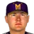

Federal Baseball League · East Group
Memphis Pharoahs
19-21 .475 · 6th in East Group, 5½ GB
Run differential +10 (220 RS, 210 RA) · Pythagorean 21-19 · L10 6-4 · Streak W1 · Home 13-7 · Road 6-14
Sportsmans Park (capacity 30,000)
High Minors:  Pensacola Blue Wahoo · Low Minors:
Pensacola Blue Wahoo · Low Minors:  Jackson Magnolias
Jackson Magnolias
Depth chart & lineupsPayrollTransactionsLeague financesStaffBallparkRecord bookThe season so far
Season so far games over .500 by date
Recent results
Roster (28)
| # | Player | Pos | B/T | Age |
|---|---|---|---|---|
| 40 | Wilson Alvarez | SP | L/L | 32 |
| 57 | Erik Bedard | SP | L/L | 23 |
| 21 | Shawn Chacon | SP | R/R | 24 |
| 59 |  Ryan Drese | SP | R/R | 26 |
| 35 | Osvaldo Fernandez | SP | R/R | 33 |
| 61 | Antonio Alfonseca | RP | R/R | 30 |
| 20 | Matt Blank | RP | L/L | 26 |
| 19 | Tom Davey | RP | R/R | 28 |
| 39 | Mike Fetters | RP | R/R | 37 |
| 38 | Britt Reames | RP | R/R | 28 |
| 4 | RP | L/L | 39 | |
| 47 | Felix Rodriguez | CL | R/R | 29 |
| 67 | Ramon Hernandez | C | R/R | 25 |
| 71 | C | L/R | 21 | |
| 41 | Adrian Gonzalez | 1B | L/L | 20 |
| 33 | Julio Zuleta | 1B | R/R | 27 |
| 1 | Luis Castillo | 2B | S/R | 26 |
| 29 | 2B | S/R | 25 | |
| 14 | Greg Norton | 3B | S/R | 29 |
| 26 | Lou Merloni | SS | R/R | 31 |
| 3 | SS | L/R | 29 | |
| 2 | LF | R/R | 29 | |
| 5 | Geoff Jenkins | LF | L/R | 27 |
| 22 | LF | R/R | 26 | |
| 22 | LF | R/R | 26 | |
| 13 | Jason Tyner | CF | L/L | 25 |
| 81 | Carlos Rivera | RF | L/L | 23 |
| 44 | Aaron Rowand | RF | R/R | 24 |
2002 batting
| Player | G | PA | AB | R | H | 2B | 3B | HR | RBI | BB | K | SB | AVG | OBP | SLG | OPS |
|---|---|---|---|---|---|---|---|---|---|---|---|---|---|---|---|---|
| Luis Castillo | 38 | 186 | 162 | 29 | 38 | 10 | 1 | 1 | 17 | 23 | 21 | 13 | .235 | .333 | .327 | .660 |
| Aaron Rowand | 38 | 177 | 163 | 25 | 50 | 13 | 2 | 5 | 21 | 10 | 35 | 8 | .307 | .352 | .503 | .855 |
| Lou Merloni | 37 | 175 | 160 | 27 | 57 | 16 | 1 | 5 | 32 | 11 | 26 | 3 | .356 | .393 | .562 | .956 |
| Geoff Jenkins | 37 | 174 | 149 | 21 | 44 | 14 | 0 | 5 | 31 | 22 | 33 | 1 | .295 | .385 | .490 | .875 |
| Julio Zuleta | 38 | 167 | 149 | 18 | 33 | 8 | 0 | 4 | 25 | 9 | 39 | 1 | .221 | .281 | .356 | .637 |
| Greg Norton | 38 | 164 | 149 | 25 | 45 | 8 | 1 | 5 | 22 | 14 | 33 | 2 | .302 | .360 | .470 | .830 |
| Adrian Gonzalez | 38 | 151 | 137 | 17 | 46 | 8 | 4 | 2 | 18 | 13 | 25 | 1 | .336 | .391 | .496 | .887 |
| Jason Tyner | 38 | 150 | 135 | 19 | 37 | 7 | 0 | 1 | 17 | 10 | 15 | 13 | .274 | .329 | .348 | .677 |
| Ramon Hernandez | 32 | 142 | 127 | 18 | 36 | 4 | 0 | 5 | 14 | 11 | 17 | 0 | .283 | .340 | .433 | .773 |
| Henry Mateo | 18 | 54 | 46 | 8 | 8 | 1 | 1 | 0 | 1 | 6 | 12 | 4 | .174 | .283 | .239 | .522 |
| Carlos Rivera | 9 | 33 | 29 | 9 | 10 | 1 | 0 | 4 | 7 | 3 | 3 | 0 | .345 | .394 | .793 | 1.187 |
| Andy Thompson | 6 | 15 | 14 | 0 | 2 | 1 | 1 | 0 | 2 | 1 | 5 | 0 | .143 | .200 | .357 | .557 |
| Kimera Bartee | 6 | 14 | 13 | 3 | 5 | 0 | 0 | 1 | 1 | 1 | 3 | 3 | .385 | .429 | .615 | 1.044 |
| Jesus Reyes | 8 | 13 | 12 | 1 | 3 | 0 | 0 | 0 | 0 | 1 | 2 | 0 | .250 | .308 | .250 | .558 |
| Hunter Brown | 4 | 9 | 8 | 0 | 0 | 0 | 0 | 0 | 1 | 0 | 2 | 0 | .000 | .000 | .000 | .000 |
| Mike Jacobs | 3 | 6 | 6 | 0 | 1 | 0 | 0 | 0 | 0 | 0 | 2 | 0 | .167 | .167 | .167 | .333 |
| Team | 40 | 1630 | 1459 | 220 | 415 | 91 | 11 | 38 | 209 | 135 | 273 | 49 | .284 | .347 | .440 | .787 |
2002 batting, advanced
| Player | PA | AVG | OBP | SLG | OPS+ | ISO | BABIP | BB% | K% | WPA | UBR | WAR |
|---|---|---|---|---|---|---|---|---|---|---|---|---|
| Luis Castillo | 186 | .235 | .333 | .327 | 73 | .093 | .264 | 12.4% | 11.3% | 0.41 | 1.1 | 0.3 |
| Aaron Rowand | 177 | .307 | .352 | .503 | 119 | .196 | .363 | 5.6% | 19.8% | 0.11 | -0.3 | 1.3 |
| Lou Merloni | 175 | .356 | .393 | .562 | 145 | .206 | .397 | 6.3% | 14.9% | 1.10 | -5.5 | 0.9 |
| Geoff Jenkins | 174 | .295 | .385 | .490 | 126 | .195 | .345 | 12.6% | 19.0% | 1.27 | -1.7 | 0.5 |
| Julio Zuleta | 167 | .221 | .281 | .356 | 65 | .134 | .264 | 5.4% | 23.4% | -0.35 | -0.4 | -0.5 |
| Greg Norton | 164 | .302 | .360 | .470 | 114 | .168 | .357 | 8.5% | 20.1% | -0.33 | -0.6 | 0.8 |
| Adrian Gonzalez | 151 | .336 | .391 | .496 | 129 | .161 | .396 | 8.6% | 16.6% | 0.48 | -3.8 | 0.6 |
| Jason Tyner | 150 | .274 | .329 | .348 | 77 | .074 | .298 | 6.7% | 10.0% | -0.35 | -0.7 | 0.6 |
| Ramon Hernandez | 142 | .283 | .340 | .433 | 100 | .150 | .290 | 7.7% | 12.0% | -0.50 | -0.4 | 0.4 |
| Henry Mateo | 54 | .174 | .283 | .239 | 38 | .065 | .235 | 11.1% | 22.2% | -0.07 | 0.4 | -0.2 |
| Carlos Rivera | 33 | .345 | .394 | .793 | 198 | .448 | .261 | 9.1% | 9.1% | 0.70 | 0.1 | 0.6 |
| Andy Thompson | 15 | .143 | .200 | .357 | 41 | .214 | .222 | 6.7% | 33.3% | -0.18 | -0.3 | -0.2 |
| Kimera Bartee | 14 | .385 | .429 | .615 | 168 | .231 | .444 | 7.1% | 21.4% | 0.05 | 0.0 | 0.1 |
| Jesus Reyes | 13 | .250 | .308 | .250 | 48 | .000 | .300 | 7.7% | 15.4% | -0.14 | 0.0 | -0.1 |
| Hunter Brown | 9 | .000 | .000 | .000 | -100 | .000 | .000 | 0.0% | 22.2% | -0.33 | 0.0 | -0.3 |
| Mike Jacobs | 6 | .167 | .167 | .167 | -13 | .000 | .250 | 0.0% | 33.3% | -0.14 | 0.0 | -0.1 |
| Team | 1630 | .284 | .347 | .440 | 103 | .156 | .324 | 8.3% | 16.7% | 1.74 | -12.0 | 4.8 |
2002 pitching
| Pitcher | G | GS | W | L | SV | IP | H | R | ER | BB | K | HR | ERA | WHIP |
|---|---|---|---|---|---|---|---|---|---|---|---|---|---|---|
| Wilson Alvarez | 9 | 9 | 4 | 3 | 0 | 55.1 | 60 | 33 | 31 | 25 | 42 | 8 | 5.04 | 1.54 |
| Osvaldo Fernandez | 8 | 8 | 1 | 2 | 0 | 46.2 | 56 | 28 | 27 | 19 | 20 | 3 | 5.21 | 1.61 |
| Ryan Drese | 8 | 8 | 3 | 3 | 0 | 44.1 | 50 | 23 | 18 | 22 | 23 | 3 | 3.65 | 1.62 |
| Erik Bedard | 8 | 8 | 3 | 0 | 0 | 43.1 | 41 | 20 | 19 | 29 | 37 | 2 | 3.95 | 1.62 |
| Shawn Chacon | 7 | 7 | 1 | 4 | 0 | 32.0 | 39 | 21 | 20 | 23 | 24 | 3 | 5.62 | 1.94 |
| Rich Rodriguez | 11 | 0 | 0 | 0 | 0 | 25.0 | 27 | 10 | 9 | 5 | 13 | 1 | 3.24 | 1.28 |
| Tom Davey | 12 | 0 | 0 | 1 | 1 | 23.2 | 28 | 9 | 9 | 16 | 13 | 2 | 3.42 | 1.86 |
| Mike Fetters | 13 | 0 | 2 | 1 | 0 | 22.0 | 29 | 16 | 14 | 16 | 19 | 2 | 5.73 | 2.05 |
| Britt Reames | 12 | 0 | 2 | 4 | 0 | 18.0 | 21 | 16 | 11 | 10 | 17 | 3 | 5.50 | 1.72 |
| Antonio Alfonseca | 10 | 0 | 1 | 2 | 1 | 14.1 | 21 | 11 | 9 | 2 | 15 | 1 | 5.65 | 1.60 |
| Matt Blank | 7 | 0 | 0 | 0 | 1 | 14.0 | 28 | 12 | 11 | 8 | 6 | 4 | 7.07 | 2.57 |
| Josh Pearce | 5 | 0 | 2 | 0 | 0 | 12.1 | 13 | 7 | 7 | 4 | 8 | 1 | 5.11 | 1.38 |
| Felix Rodriguez | 12 | 0 | 0 | 1 | 7 | 11.0 | 10 | 4 | 4 | 7 | 8 | 0 | 3.27 | 1.55 |
| Team | 40 | 40 | 19 | 21 | 10 | 362.0 | 423 | 210 | 189 | 186 | 245 | 33 | 4.70 | 1.68 |
2002 pitching, advanced
| Pitcher | IP | ERA | WHIP | K/9 | BB/9 | HR/9 | K% | BB% | K-BB% | FIP | ERA+ | GB% | WPA | WAR |
|---|---|---|---|---|---|---|---|---|---|---|---|---|---|---|
| Wilson Alvarez | 55.1 | 5.04 | 1.54 | 6.8 | 4.1 | 1.3 | 16.9% | 10.1% | 6.9% | 5.07 | 92 | 46.6% | -0.40 | 0.5 |
| Osvaldo Fernandez | 46.2 | 5.21 | 1.61 | 3.9 | 3.7 | 0.6 | 9.5% | 9.0% | 0.5% | 4.63 | 89 | 49.1% | -0.99 | 0.6 |
| Ryan Drese | 44.1 | 3.65 | 1.62 | 4.7 | 4.5 | 0.6 | 11.0% | 10.5% | 0.5% | 4.76 | 127 | 45.4% | -0.23 | 0.5 |
| Erik Bedard | 43.1 | 3.95 | 1.62 | 7.7 | 6.0 | 0.4 | 18.8% | 14.7% | 4.1% | 4.34 | 117 | 46.6% | 0.32 | 0.7 |
| Shawn Chacon | 32.0 | 5.62 | 1.94 | 6.8 | 6.5 | 0.8 | 15.7% | 15.0% | 0.7% | 5.36 | 82 | 44.6% | -0.60 | 0.2 |
| Rich Rodriguez | 25.0 | 3.24 | 1.28 | 4.7 | 1.8 | 0.4 | 12.3% | 4.7% | 7.5% | 3.50 | 143 | 48.3% | 0.65 | 0.4 |
| Tom Davey | 23.2 | 3.42 | 1.86 | 4.9 | 6.1 | 0.8 | 11.3% | 13.9% | -2.6% | 5.33 | 135 | 40.4% | 0.36 | -0.1 |
| Mike Fetters | 22.0 | 5.73 | 2.05 | 7.8 | 6.5 | 0.8 | 17.3% | 14.5% | 2.7% | 4.93 | 81 | 53.3% | -0.86 | 0.0 |
| Britt Reames | 18.0 | 5.50 | 1.72 | 8.5 | 5.0 | 1.5 | 20.0% | 11.8% | 8.2% | 5.24 | 84 | 57.1% | -1.56 | -0.1 |
| Antonio Alfonseca | 14.1 | 5.65 | 1.60 | 9.4 | 1.3 | 0.6 | 23.1% | 3.1% | 20.0% | 2.53 | 82 | 50.0% | -0.33 | 0.6 |
| Matt Blank | 14.0 | 7.07 | 2.57 | 3.9 | 5.1 | 2.6 | 7.8% | 10.4% | -2.6% | 7.87 | 65 | 32.4% | 0.17 | -0.4 |
| Josh Pearce | 12.1 | 5.11 | 1.38 | 5.8 | 2.9 | 0.7 | 14.5% | 7.3% | 7.3% | 4.51 | 91 | 46.4% | 0.19 | 0.1 |
| Felix Rodriguez | 11.0 | 3.27 | 1.55 | 6.5 | 5.7 | 0.0 | 16.0% | 14.0% | 2.0% | 4.03 | 141 | 50.0% | 0.37 | 0.2 |
| Team | 362.0 | 4.70 | 1.68 | 6.1 | 4.6 | 0.8 | 14.6% | 11.1% | 3.5% | 4.78 | 99 | 46.7% | -2.91 | 3.2 |
2002 fielding
| Player | Pos | G | GS | Inn | TC | PO | A | E | DP | FPct | ZR | Arm | Framing |
|---|---|---|---|---|---|---|---|---|---|---|---|---|---|
| Jim Dougherty | P | 60 | 0 | 480.0 | 25 | 6 | 18 | 1 | 3 | .960 | 0.0 | - | - |
| Bryan Eversgerd | P | 59 | 0 | 472.0 | 23 | 7 | 16 | 0 | 0 | 1.000 | 0.0 | - | - |
| Jason Karnuth | P | 55 | 0 | 440.0 | 12 | 2 | 10 | 0 | 1 | 1.000 | 0.0 | - | - |
| Rick Heiserman | P | 55 | 1 | 440.0 | 15 | 4 | 11 | 0 | 1 | 1.000 | 0.0 | - | - |
| Jose Rodriguez | P | 54 | 0 | 432.0 | 12 | 6 | 6 | 0 | 0 | 1.000 | 0.0 | - | - |
| Rusty Meacham | P | 53 | 2 | 424.0 | 17 | 7 | 9 | 1 | 0 | .941 | 0.0 | - | - |
| Rick Heiserman | P | 52 | 0 | 416.0 | 14 | 6 | 7 | 1 | 0 | .929 | 0.0 | - | - |
| Kevin Lovingier | P | 51 | 0 | 408.0 | 30 | 7 | 21 | 2 | 2 | .933 | 0.0 | - | - |
| Bryan Eversgerd | P | 49 | 0 | 392.0 | 22 | 7 | 14 | 1 | 2 | .955 | 0.0 | - | - |
| Bryan Eversgerd | P | 48 | 0 | 384.0 | 23 | 5 | 17 | 1 | 1 | .957 | 0.0 | - | - |
| Gene Stechschulte | P | 41 | 0 | 328.0 | 10 | 4 | 6 | 0 | 0 | 1.000 | 0.0 | - | - |
| Rick Heiserman | P | 40 | 0 | 320.0 | 8 | 3 | 5 | 0 | 0 | 1.000 | 0.0 | - | - |
| Jose Rodriguez | P | 40 | 0 | 320.0 | 9 | 1 | 8 | 0 | 1 | 1.000 | 0.0 | - | - |
| Braden Looper | P | 40 | 0 | 320.0 | 23 | 6 | 16 | 1 | 1 | .957 | 0.0 | - | - |
| Kevin Lovingier | P | 39 | 0 | 312.0 | 6 | 0 | 6 | 0 | 1 | 1.000 | 0.0 | - | - |
| Benson Rath | P | 37 | 16 | 296.0 | 28 | 11 | 13 | 4 | 3 | .857 | 0.0 | - | - |
| McDonnell Barnes | P | 36 | 10 | 288.0 | 16 | 4 | 9 | 3 | 0 | .812 | 0.0 | - | - |
| Mark Nussbeck | P | 36 | 16 | 288.0 | 18 | 6 | 10 | 2 | 1 | .889 | 0.0 | - | - |
| McDonnell Barnes | P | 35 | 21 | 280.0 | 25 | 7 | 17 | 1 | 3 | .960 | 0.0 | - | - |
| Kennie Steenstra | P | 34 | 20 | 272.0 | 25 | 5 | 20 | 0 | 3 | 1.000 | 0.0 | - | - |
| Jeff Tabaka | P | 32 | 0 | 256.0 | 8 | 1 | 7 | 0 | 0 | 1.000 | 0.0 | - | - |
| Armando Almanza | P | 31 | 0 | 248.0 | 19 | 5 | 13 | 1 | 1 | .947 | 0.0 | - | - |
| Justin Brunette | P | 30 | 0 | 240.0 | 5 | 0 | 4 | 1 | 1 | .800 | 0.0 | - | - |
| Larry Luebbers | P | 29 | 29 | 232.0 | 17 | 4 | 12 | 1 | 1 | .941 | 0.0 | - | - |
| Jerry Spradlin | P | 29 | 0 | 232.0 | 17 | 4 | 12 | 1 | 1 | .941 | 0.0 | - | - |
| Mike Busby | P | 29 | 10 | 232.0 | 10 | 5 | 3 | 2 | 0 | .800 | 0.0 | - | - |
| Jeremy Lambert | P | 28 | 0 | 224.0 | 16 | 4 | 11 | 1 | 1 | .938 | 0.0 | - | - |
| Benson Rath | P | 27 | 10 | 216.0 | 11 | 4 | 7 | 0 | 0 | 1.000 | 0.0 | - | - |
| Curtis King | P | 27 | 0 | 216.0 | 7 | 3 | 4 | 0 | 2 | 1.000 | 0.0 | - | - |
| Curtis King | P | 27 | 3 | 216.0 | 5 | 2 | 3 | 0 | 0 | 1.000 | 0.0 | - | - |
| Rafael Medina | P | 27 | 0 | 216.0 | 7 | 4 | 2 | 1 | 1 | .857 | 0.0 | - | - |
| Chad Hutchinson | P | 27 | 20 | 216.0 | 13 | 4 | 6 | 3 | 1 | .769 | 0.0 | - | - |
| Alan Benes | P | 25 | 25 | 200.0 | 25 | 16 | 7 | 2 | 2 | .920 | 0.0 | - | - |
| Sean Lowe | P | 25 | 21 | 200.0 | 28 | 6 | 22 | 0 | 0 | 1.000 | 0.0 | - | - |
| Rick Heiserman | P | 24 | 4 | 192.0 | 4 | 1 | 3 | 0 | 0 | 1.000 | 0.0 | - | - |
| Brady Raggio | P | 24 | 23 | 192.0 | 31 | 16 | 14 | 1 | 4 | .968 | 0.0 | - | - |
| Rich Croushore | P | 23 | 0 | 184.0 | 13 | 3 | 9 | 1 | 1 | .923 | 0.0 | - | - |
| Allen McDill | P | 23 | 0 | 184.0 | 5 | 1 | 4 | 0 | 0 | 1.000 | 0.0 | - | - |
| Luther Hackman | P | 21 | 21 | 168.0 | 18 | 3 | 13 | 2 | 1 | .889 | 0.0 | - | - |
| Larry Luebbers | P | 21 | 19 | 168.0 | 11 | 3 | 7 | 1 | 1 | .909 | 0.0 | - | - |
| Mark Nussbeck | P | 21 | 21 | 168.0 | 24 | 7 | 16 | 1 | 3 | .958 | 0.0 | - | - |
| Dave Wainhouse | P | 20 | 6 | 160.0 | 9 | 3 | 5 | 1 | 1 | .889 | 0.0 | - | - |
| Clint Sodowsky | P | 19 | 13 | 152.0 | 22 | 12 | 8 | 2 | 0 | .909 | 0.0 | - | - |
| Clint Weibl | P | 19 | 18 | 152.0 | 21 | 7 | 13 | 1 | 0 | .952 | 0.0 | - | - |
| Kevin Joseph | P | 17 | 0 | 136.0 | 6 | 2 | 4 | 0 | 0 | 1.000 | 0.0 | - | - |
| Bud Smith | P | 17 | 17 | 136.0 | 3 | 0 | 3 | 0 | 1 | 1.000 | 0.0 | - | - |
| Luther Hackman | P | 16 | 0 | 128.0 | 3 | 1 | 2 | 0 | 0 | 1.000 | 0.0 | - | - |
| Jason Karnuth | P | 16 | 13 | 128.0 | 9 | 2 | 6 | 1 | 1 | .889 | 0.0 | - | - |
| Rick Ankiel | P | 16 | 16 | 128.0 | 9 | 2 | 6 | 1 | 1 | .889 | 0.0 | - | - |
| T.J. Mathews | P | 15 | 0 | 120.0 | 3 | 1 | 2 | 0 | 0 | 1.000 | 0.0 | - | - |
| Mike Cather | P | 15 | 0 | 120.0 | 6 | 0 | 6 | 0 | 0 | 1.000 | 0.0 | - | - |
| Rick Krivda | P | 14 | 13 | 112.0 | 14 | 1 | 11 | 2 | 0 | .857 | 0.0 | - | - |
| Britt Reames | P | 13 | 13 | 104.0 | 7 | 2 | 5 | 0 | 0 | 1.000 | 0.0 | - | - |
| Manuel Aybar | P | 13 | 13 | 104.0 | 15 | 8 | 7 | 0 | 0 | 1.000 | 0.0 | - | - |
| John Ambrose | P | 13 | 0 | 104.0 | 3 | 1 | 2 | 0 | 0 | 1.000 | 0.0 | - | - |
| Darren Holmes | P | 12 | 0 | 96.0 | 7 | 2 | 5 | 0 | 0 | 1.000 | 0.0 | - | - |
| Mike James | P | 10 | 0 | 80.0 | 2 | 0 | 2 | 0 | 0 | 1.000 | 0.0 | - | - |
| Cliff Politte | P | 10 | 10 | 80.0 | 5 | 1 | 4 | 0 | 0 | 1.000 | 0.0 | - | - |
| Josh Pearce | P | 10 | 10 | 80.0 | 12 | 6 | 6 | 0 | 0 | 1.000 | 0.0 | - | - |
| Jim Bullinger | P | 10 | 10 | 80.0 | 11 | 4 | 7 | 0 | 0 | 1.000 | 0.0 | - | - |
| Mike Mohler | P | 10 | 0 | 80.0 | 2 | 0 | 2 | 0 | 0 | 1.000 | 0.0 | - | - |
| Alan Benes | P | 9 | 8 | 72.0 | 7 | 2 | 5 | 0 | 0 | 1.000 | 0.0 | - | - |
| Mark Thompson | P | 9 | 8 | 72.0 | 5 | 1 | 4 | 0 | 0 | 1.000 | 0.0 | - | - |
| Mike Matthews | P | 9 | 9 | 72.0 | 5 | 1 | 4 | 0 | 0 | 1.000 | 0.0 | - | - |
| Bud Smith | P | 9 | 8 | 72.0 | 5 | 1 | 4 | 0 | 0 | 1.000 | 0.0 | - | - |
| Mike James | P | 8 | 0 | 64.0 | 2 | 2 | 0 | 0 | 0 | 1.000 | 0.0 | - | - |
| Rick Huisman | P | 8 | 0 | 64.0 | 3 | 1 | 1 | 1 | 0 | .667 | 0.0 | - | - |
| Burford High Minors | P | 7 | 3 | 56.0 | 4 | 0 | 3 | 1 | 0 | .750 | 0.0 | - | - |
| Jason Christiansen | P | 7 | 1 | 56.0 | 6 | 1 | 5 | 0 | 0 | 1.000 | 0.0 | - | - |
| Rich Croushore | P | 7 | 0 | 56.0 | 2 | 1 | 1 | 0 | 0 | 1.000 | 0.0 | - | - |
| Mike Busby | P | 7 | 2 | 56.0 | 5 | 2 | 3 | 0 | 0 | 1.000 | 0.0 | - | - |
| Tom Urbani | P | 7 | 6 | 56.0 | 4 | 1 | 3 | 0 | 0 | 1.000 | 0.0 | - | - |
| Wilson Alvarez | P | 9 | 9 | 55.1 | 4 | 0 | 3 | 1 | 0 | .750 | 0.4 | - | - |
| Mark Thompson | P | 6 | 5 | 48.0 | 5 | 1 | 3 | 1 | 0 | .800 | 0.0 | - | - |
| Osvaldo Fernandez | P | 8 | 8 | 46.2 | 8 | 1 | 7 | 0 | 1 | 1.000 | 1.9 | - | - |
| Ryan Drese | P | 8 | 8 | 44.1 | 9 | 2 | 4 | 3 | 0 | .667 | -0.7 | - | - |
| Erik Bedard | P | 8 | 8 | 43.1 | 3 | 1 | 2 | 0 | 1 | 1.000 | 1.0 | - | - |
| Victor Cole | P | 5 | 3 | 40.0 | 5 | 2 | 3 | 0 | 0 | 1.000 | 0.0 | - | - |
| Chad Hutchinson | P | 5 | 4 | 40.0 | 3 | 1 | 2 | 0 | 0 | 1.000 | 0.0 | - | - |
| Mike Stefanski | P | 5 | 0 | 40.0 | 2 | 0 | 2 | 0 | 0 | 1.000 | 0.0 | - | - |
| Clint Weibl | P | 5 | 0 | 40.0 | 4 | 3 | 1 | 0 | 0 | 1.000 | 0.0 | - | - |
| Dempster American Baseball League | P | 4 | 0 | 32.0 | 2 | 1 | 1 | 0 | 0 | 1.000 | 0.0 | - | - |
| Shawn Chacon | P | 7 | 7 | 32.0 | 3 | 1 | 2 | 0 | 0 | 1.000 | 1.1 | - | - |
| Matt Morris | P | 4 | 4 | 32.0 | 1 | 1 | 0 | 0 | 0 | 1.000 | 0.0 | - | - |
| Garrett Stephenson | P | 4 | 4 | 32.0 | 5 | 0 | 5 | 0 | 1 | 1.000 | 0.0 | - | - |
| Jose Jimenez | P | 4 | 4 | 32.0 | 4 | 1 | 3 | 0 | 0 | 1.000 | 0.0 | - | - |
| Reed Secrist | P | 4 | 0 | 32.0 | 1 | 1 | 0 | 0 | 0 | 1.000 | 0.0 | - | - |
| Rich Rodriguez | P | 11 | 0 | 25.0 | 8 | 3 | 5 | 0 | 0 | 1.000 | 0.7 | - | - |
| Matt Morris | P | 3 | 3 | 24.0 | 3 | 0 | 3 | 0 | 1 | 1.000 | 0.0 | - | - |
| Alan Benes | P | 3 | 3 | 24.0 | 3 | 1 | 2 | 0 | 0 | 1.000 | 0.0 | - | - |
| Victor Cole | P | 3 | 0 | 24.0 | 2 | 1 | 1 | 0 | 0 | 1.000 | 0.0 | - | - |
| Steve Ontiveros | P | 3 | 3 | 24.0 | 2 | 1 | 0 | 1 | 0 | .500 | 0.0 | - | - |
| Brian Maxcy | P | 3 | 0 | 24.0 | 2 | 1 | 1 | 0 | 0 | 1.000 | 0.0 | - | - |
| Rick Ankiel | P | 3 | 3 | 24.0 | 2 | 0 | 2 | 0 | 0 | 1.000 | 0.0 | - | - |
| Tom Davey | P | 12 | 0 | 23.2 | 3 | 2 | 1 | 0 | 0 | 1.000 | 0.7 | - | - |
| Mike Fetters | P | 13 | 0 | 22.0 | 2 | 1 | 1 | 0 | 0 | 1.000 | 0.0 | - | - |
| Britt Reames | P | 12 | 0 | 18.0 | 2 | 0 | 2 | 0 | 0 | 1.000 | -0.1 | - | - |
| Caston Heflin | P | 2 | 0 | 16.0 | 1 | 1 | 0 | 0 | 0 | 1.000 | 0.0 | - | - |
| Juan Acevedo | P | 2 | 2 | 16.0 | 1 | 0 | 1 | 0 | 0 | 1.000 | 0.0 | - | - |
| Heathcliff Slocumb | P | 2 | 0 | 16.0 | 1 | 0 | 1 | 0 | 0 | 1.000 | 0.0 | - | - |
| Chad Hutchinson | P | 2 | 2 | 16.0 | 2 | 2 | 0 | 0 | 0 | 1.000 | 0.0 | - | - |
| Gene Stechschulte | P | 2 | 0 | 16.0 | 1 | 0 | 1 | 0 | 0 | 1.000 | 0.0 | - | - |
| Stubby Clapp | P | 2 | 0 | 16.0 | 1 | 0 | 1 | 0 | 0 | 1.000 | 0.0 | - | - |
| Kevin Lidle | P | 2 | 0 | 16.0 | 1 | 0 | 1 | 0 | 0 | 1.000 | 0.0 | - | - |
| Mike Stefanski | P | 2 | 0 | 16.0 | 1 | 0 | 1 | 0 | 0 | 1.000 | 0.0 | - | - |
| Clint Weibl | P | 2 | 2 | 16.0 | 2 | 0 | 2 | 0 | 0 | 1.000 | 0.0 | - | - |
| Matt Blank | P | 7 | 0 | 14.0 | 2 | 1 | 0 | 1 | 0 | .500 | -0.9 | - | - |
| Antonio Alfonseca | P | 10 | 0 | 14.1 | 2 | 0 | 2 | 0 | 0 | 1.000 | 0.1 | - | - |
| Josh Pearce | P | 5 | 0 | 12.1 | 3 | 1 | 2 | 0 | 0 | 1.000 | 0.1 | - | - |
| Felix Rodriguez | P | 12 | 0 | 11.0 | 2 | 0 | 2 | 0 | 0 | 1.000 | 0.0 | - | - |
| Whittaker High Minors | P | 1 | 0 | 8.0 | 0 | 0 | 0 | 0 | 0 | - | 0.0 | - | - |
| Whittaker High Minors | P | 1 | 0 | 8.0 | 0 | 0 | 0 | 0 | 0 | - | 0.0 | - | - |
| Eduardo Perez | P | 1 | 0 | 8.0 | 0 | 0 | 0 | 0 | 0 | - | 0.0 | - | - |
| Eduardo Perez | P | 1 | 0 | 8.0 | 1 | 0 | 1 | 0 | 0 | 1.000 | 0.0 | - | - |
| Luis Ordaz | P | 1 | 0 | 8.0 | 0 | 0 | 0 | 0 | 0 | - | 0.0 | - | - |
| Luis Ordaz | P | 1 | 0 | 8.0 | 0 | 0 | 0 | 0 | 0 | - | 0.0 | - | - |
| Garrett Stephenson | P | 1 | 1 | 8.0 | 1 | 0 | 1 | 0 | 0 | 1.000 | 0.0 | - | - |
| Danny Sheaffer | P | 1 | 0 | 8.0 | 0 | 0 | 0 | 0 | 0 | - | 0.0 | - | - |
| Joe McEwing | P | 1 | 0 | 8.0 | 0 | 0 | 0 | 0 | 0 | - | 0.0 | - | - |
| Shawn Gilbert | P | 1 | 0 | 8.0 | 0 | 0 | 0 | 0 | 0 | - | 0.0 | - | - |
| Chip Hale | P | 1 | 0 | 8.0 | 0 | 0 | 0 | 0 | 0 | - | 0.0 | - | - |
| Donovan Osborne | P | 1 | 1 | 8.0 | 1 | 0 | 1 | 0 | 0 | 1.000 | 0.0 | - | - |
| Clint Weibl | P | 1 | 1 | 8.0 | 1 | 0 | 1 | 0 | 0 | 1.000 | 0.0 | - | - |
| Juan Munoz | P | 1 | 0 | 8.0 | 0 | 0 | 0 | 0 | 0 | - | 0.0 | - | - |
| Keith McDonald | C | 91 | 75 | 728.0 | 654 | 600 | 53 | 1 | 4 | .998 | 0.6 | 0.0 | 0.0 |
| Mike Stefanski | C | 85 | 77 | 680.0 | 689 | 629 | 55 | 5 | 10 | .993 | 0.5 | 0.0 | 0.0 |
| Keith McDonald | C | 76 | 63 | 608.0 | 524 | 466 | 51 | 7 | 7 | .987 | 0.4 | 0.0 | 0.0 |
| Marcus Jensen | C | 59 | 49 | 472.0 | 414 | 380 | 32 | 2 | 1 | .995 | 0.4 | 0.0 | 0.0 |
| Mike Stefanski | C | 58 | 52 | 464.0 | 446 | 411 | 26 | 9 | 4 | .980 | -0.4 | 0.0 | 0.0 |
| Rick Wilkins | C | 57 | 46 | 456.0 | 386 | 340 | 42 | 4 | 5 | .990 | -0.1 | 0.0 | 0.0 |
| Mike Stefanski | C | 52 | 40 | 416.0 | 354 | 323 | 29 | 2 | 2 | .994 | 0.0 | 0.0 | 0.0 |
| Kevin Lidle | C | 40 | 29 | 320.0 | 255 | 214 | 34 | 7 | 2 | .973 | -0.4 | 0.0 | 0.0 |
| Ramon Hernandez | C | 32 | 32 | 289.1 | 230 | 202 | 26 | 2 | 1 | .991 | 0.0 | 0.0 | -1.9 |
| Keith McDonald | C | 32 | 23 | 256.0 | 204 | 189 | 15 | 0 | 3 | 1.000 | 0.2 | 0.0 | 0.0 |
| Eli Marrero | C | 27 | 24 | 216.0 | 214 | 195 | 17 | 2 | 2 | .991 | 0.2 | 0.0 | 0.0 |
| Keith McDonald | C | 25 | 20 | 200.0 | 169 | 162 | 7 | 0 | 2 | 1.000 | 0.4 | 0.0 | 0.0 |
| Brian Johnson | C | 13 | 10 | 104.0 | 85 | 78 | 5 | 2 | 2 | .976 | -0.6 | 0.0 | 0.0 |
| Julio Zuleta | C | 8 | 8 | 69.2 | 55 | 47 | 8 | 0 | 0 | 1.000 | 0.9 | 0.0 | -0.8 |
| Eli Marrero | C | 6 | 2 | 48.0 | 17 | 16 | 1 | 0 | 0 | 1.000 | 0.1 | 0.0 | 0.0 |
| Danny Sheaffer | C | 6 | 5 | 48.0 | 41 | 38 | 3 | 0 | 0 | 1.000 | 0.1 | 0.0 | 0.0 |
| Whittaker High Minors | C | 5 | 4 | 40.0 | 31 | 27 | 3 | 1 | 0 | .968 | -0.2 | 0.0 | 0.0 |
| Whittaker High Minors | C | 4 | 2 | 32.0 | 21 | 19 | 2 | 0 | 0 | 1.000 | 0.1 | 0.0 | 0.0 |
| Whittaker High Minors | C | 4 | 2 | 32.0 | 18 | 18 | 0 | 0 | 0 | 1.000 | -0.2 | 0.0 | 0.0 |
| Henry Mercedes | C | 4 | 4 | 32.0 | 30 | 25 | 5 | 0 | 1 | 1.000 | 0.1 | 0.0 | 0.0 |
| Ryan Balfe | C | 4 | 2 | 32.0 | 20 | 19 | 1 | 0 | 0 | 1.000 | 0.1 | 0.0 | 0.0 |
| Carlos Hernandez | C | 2 | 1 | 16.0 | 5 | 5 | 0 | 0 | 0 | 1.000 | 0.0 | 0.0 | 0.0 |
| Joe McEwing | C | 1 | 1 | 8.0 | 0 | 0 | 0 | 0 | 0 | - | 0.0 | 0.0 | 0.0 |
| Stubby Clapp | C | 1 | 1 | 8.0 | 0 | 0 | 0 | 0 | 0 | - | 0.0 | 0.0 | 0.0 |
| Stubby Clapp | C | 1 | 1 | 8.0 | 0 | 0 | 0 | 0 | 0 | - | 0.0 | 0.0 | 0.0 |
| Stubby Clapp | C | 1 | 1 | 8.0 | 0 | 0 | 0 | 0 | 0 | - | 0.0 | 0.0 | 0.0 |
| Jay Woolf | C | 1 | 1 | 8.0 | 6 | 5 | 1 | 0 | 0 | 1.000 | 0.0 | 0.0 | 0.0 |
| Jay Woolf | C | 1 | 1 | 8.0 | 6 | 5 | 1 | 0 | 0 | 1.000 | 0.0 | 0.0 | 0.0 |
| Reed Secrist | C | 1 | 1 | 8.0 | 0 | 0 | 0 | 0 | 0 | - | 0.0 | 0.0 | 0.0 |
| Mike Jacobs | C | 1 | 0 | 3.0 | 2 | 2 | 0 | 0 | 0 | 1.000 | 0.0 | 0.0 | 0.1 |
| Eduardo Perez | 1B | 90 | 54 | 720.0 | 779 | 708 | 64 | 7 | 78 | .991 | 0.0 | - | - |
| Larry Sutton | 1B | 86 | 64 | 688.0 | 863 | 771 | 84 | 8 | 88 | .991 | 0.0 | - | - |
| Brant Brown | 1B | 48 | 30 | 384.0 | 418 | 384 | 33 | 1 | 35 | .998 | 0.0 | - | - |
| Shane Andrews | 1B | 46 | 26 | 368.0 | 365 | 331 | 29 | 5 | 32 | .986 | 0.0 | - | - |
| Adrian Gonzalez | 1B | 38 | 38 | 337.0 | 328 | 310 | 18 | 0 | 15 | 1.000 | 2.1 | - | - |
| Chip Hale | 1B | 40 | 23 | 320.0 | 341 | 314 | 26 | 1 | 35 | .997 | 0.0 | - | - |
| Eduardo Perez | 1B | 36 | 24 | 288.0 | 321 | 301 | 18 | 2 | 31 | .994 | 0.0 | - | - |
| Chris Haas | 1B | 31 | 19 | 248.0 | 272 | 256 | 15 | 1 | 30 | .996 | 0.0 | - | - |
| Reed Secrist | 1B | 20 | 10 | 160.0 | 153 | 143 | 6 | 4 | 14 | .974 | 0.0 | - | - |
| Andy Bevins | 1B | 17 | 8 | 136.0 | 117 | 112 | 2 | 3 | 7 | .974 | 0.0 | - | - |
| Chris Richard | 1B | 13 | 8 | 104.0 | 105 | 99 | 6 | 0 | 6 | 1.000 | 0.0 | - | - |
| Ryan Balfe | 1B | 12 | 7 | 96.0 | 91 | 83 | 8 | 0 | 4 | 1.000 | 0.0 | - | - |
| Dempster American Baseball League | 1B | 10 | 5 | 80.0 | 74 | 71 | 2 | 1 | 7 | .986 | 0.0 | - | - |
| Chris Haas | 1B | 10 | 6 | 80.0 | 87 | 81 | 4 | 2 | 11 | .977 | 0.0 | - | - |
| Danny Sheaffer | 1B | 9 | 4 | 72.0 | 62 | 54 | 8 | 0 | 4 | 1.000 | 0.0 | - | - |
| Mike Stefanski | 1B | 5 | 1 | 40.0 | 17 | 16 | 1 | 0 | 1 | 1.000 | 0.0 | - | - |
| Chris Richard | 1B | 4 | 3 | 32.0 | 39 | 34 | 5 | 0 | 4 | 1.000 | 0.0 | - | - |
| Brian Johnson | 1B | 4 | 2 | 32.0 | 31 | 29 | 2 | 0 | 3 | 1.000 | 0.0 | - | - |
| Lou Lucca | 1B | 4 | 1 | 32.0 | 16 | 14 | 1 | 1 | 0 | .938 | 0.0 | - | - |
| Juan Munoz | 1B | 4 | 3 | 32.0 | 40 | 38 | 1 | 1 | 2 | .975 | 0.0 | - | - |
| Juan Munoz | 1B | 4 | 2 | 32.0 | 22 | 22 | 0 | 0 | 2 | 1.000 | 0.0 | - | - |
| Keith McDonald | 1B | 3 | 1 | 24.0 | 15 | 13 | 1 | 1 | 2 | .933 | 0.0 | - | - |
| Keith McDonald | 1B | 3 | 2 | 24.0 | 21 | 17 | 3 | 1 | 1 | .952 | 0.0 | - | - |
| Keith McDonald | 1B | 3 | 2 | 24.0 | 21 | 17 | 3 | 1 | 1 | .952 | 0.0 | - | - |
| Ernie Young | 1B | 3 | 2 | 24.0 | 23 | 22 | 1 | 0 | 2 | 1.000 | 0.0 | - | - |
| Marcus Jensen | 1B | 3 | 1 | 24.0 | 16 | 14 | 1 | 1 | 2 | .938 | 0.0 | - | - |
| Lou Lucca | 1B | 3 | 1 | 24.0 | 7 | 7 | 0 | 0 | 0 | 1.000 | 0.0 | - | - |
| Mike Stefanski | 1B | 2 | 1 | 16.0 | 20 | 17 | 3 | 0 | 0 | 1.000 | 0.0 | - | - |
| Lou Merloni | 1B | 2 | 1 | 10.0 | 8 | 7 | 1 | 0 | 3 | 1.000 | 0.0 | - | - |
| Julio Zuleta | 1B | 1 | 1 | 9.0 | 5 | 4 | 1 | 0 | 0 | 1.000 | 0.1 | - | - |
| Whittaker High Minors | 1B | 1 | 1 | 8.0 | 0 | 0 | 0 | 0 | 0 | - | 0.0 | - | - |
| Whittaker High Minors | 1B | 1 | 1 | 8.0 | 0 | 0 | 0 | 0 | 0 | - | 0.0 | - | - |
| Whittaker High Minors | 1B | 1 | 1 | 8.0 | 0 | 0 | 0 | 0 | 0 | - | 0.0 | - | - |
| Mark Little | 1B | 1 | 1 | 8.0 | 0 | 0 | 0 | 0 | 0 | - | 0.0 | - | - |
| Mark Little | 1B | 1 | 1 | 8.0 | 0 | 0 | 0 | 0 | 0 | - | 0.0 | - | - |
| Mark Little | 1B | 1 | 1 | 8.0 | 0 | 0 | 0 | 0 | 0 | - | 0.0 | - | - |
| Henry Mercedes | 1B | 1 | 1 | 8.0 | 0 | 0 | 0 | 0 | 0 | - | 0.0 | - | - |
| Adam Kennedy | 1B | 1 | 1 | 8.0 | 0 | 0 | 0 | 0 | 0 | - | 0.0 | - | - |
| Adam Kennedy | 1B | 1 | 1 | 8.0 | 0 | 0 | 0 | 0 | 0 | - | 0.0 | - | - |
| Carlos Hernandez | 1B | 1 | 1 | 8.0 | 0 | 0 | 0 | 0 | 0 | - | 0.0 | - | - |
| Rick Wilkins | 1B | 1 | 1 | 8.0 | 4 | 4 | 0 | 0 | 0 | 1.000 | 0.0 | - | - |
| Joe McEwing | 1B | 1 | 1 | 8.0 | 0 | 0 | 0 | 0 | 0 | - | 0.0 | - | - |
| Shawn Gilbert | 1B | 1 | 1 | 8.0 | 0 | 0 | 0 | 0 | 0 | - | 0.0 | - | - |
| Keith McDonald | 1B | 1 | 1 | 8.0 | 0 | 0 | 0 | 0 | 0 | - | 0.0 | - | - |
| Todd Steverson | 1B | 1 | 1 | 8.0 | 0 | 0 | 0 | 0 | 0 | - | 0.0 | - | - |
| Andy Bevins | 1B | 1 | 1 | 8.0 | 0 | 0 | 0 | 0 | 0 | - | 0.0 | - | - |
| Mike Stefanski | 1B | 1 | 1 | 8.0 | 0 | 0 | 0 | 0 | 0 | - | 0.0 | - | - |
| Carlos Rivera | 1B | 2 | 0 | 4.0 | 1 | 1 | 0 | 0 | 0 | 1.000 | 0.0 | - | - |
| Hunter Brown | 1B | 1 | 0 | 2.0 | 1 | 1 | 0 | 0 | 1 | 1.000 | 0.0 | - | - |
| Stubby Clapp | 2B | 127 | 96 | 1016.0 | 640 | 284 | 341 | 15 | 89 | .977 | 0.0 | - | - |
| Stubby Clapp | 2B | 82 | 66 | 656.0 | 430 | 184 | 236 | 10 | 53 | .977 | 0.0 | - | - |
| Chip Hale | 2B | 70 | 41 | 560.0 | 280 | 114 | 164 | 2 | 47 | .993 | 0.0 | - | - |
| Stubby Clapp | 2B | 68 | 43 | 544.0 | 284 | 119 | 157 | 8 | 42 | .972 | 0.0 | - | - |
| Placido Polanco | 2B | 58 | 40 | 464.0 | 275 | 98 | 174 | 3 | 41 | .989 | 0.0 | - | - |
| Adam Kennedy | 2B | 52 | 38 | 416.0 | 247 | 117 | 123 | 7 | 37 | .972 | 0.0 | - | - |
| Luis Castillo | 2B | 37 | 37 | 334.0 | 191 | 87 | 103 | 1 | 15 | .995 | -1.7 | - | - |
| Luis Ordaz | 2B | 34 | 24 | 272.0 | 159 | 63 | 94 | 2 | 23 | .987 | 0.0 | - | - |
| Kevin Polcovich | 2B | 26 | 16 | 208.0 | 104 | 42 | 58 | 4 | 12 | .962 | 0.0 | - | - |
| Placido Polanco | 2B | 22 | 15 | 176.0 | 100 | 34 | 65 | 1 | 24 | .990 | 0.0 | - | - |
| Lou Lucca | 2B | 18 | 13 | 144.0 | 87 | 33 | 48 | 6 | 8 | .931 | 0.0 | - | - |
| Roberto Mejia | 2B | 15 | 11 | 120.0 | 76 | 32 | 42 | 2 | 9 | .974 | 0.0 | - | - |
| Adam Kennedy | 2B | 14 | 11 | 112.0 | 76 | 30 | 43 | 3 | 11 | .961 | 0.0 | - | - |
| Wayne Kirby | 2B | 6 | 1 | 48.0 | 9 | 2 | 7 | 0 | 0 | 1.000 | 0.0 | - | - |
| T.J. Maier | 2B | 6 | 3 | 48.0 | 21 | 11 | 10 | 0 | 3 | 1.000 | 0.0 | - | - |
| Whittaker High Minors | 2B | 5 | 3 | 40.0 | 17 | 8 | 9 | 0 | 2 | 1.000 | 0.0 | - | - |
| Whittaker High Minors | 2B | 5 | 3 | 40.0 | 21 | 10 | 10 | 1 | 2 | .952 | 0.0 | - | - |
| Pablo Martinez | 2B | 5 | 4 | 40.0 | 26 | 6 | 20 | 0 | 5 | 1.000 | 0.0 | - | - |
| Luis Rafael Garcia | 2B | 4 | 3 | 32.0 | 18 | 9 | 5 | 4 | 1 | .778 | 0.0 | - | - |
| Snellgrove Howard | 2B | 4 | 2 | 32.0 | 16 | 8 | 8 | 0 | 3 | 1.000 | 0.0 | - | - |
| Chris Haas | 2B | 4 | 2 | 32.0 | 11 | 4 | 7 | 0 | 2 | 1.000 | 0.0 | - | - |
| Chris Haas | 2B | 4 | 2 | 32.0 | 11 | 4 | 7 | 0 | 2 | 1.000 | 0.0 | - | - |
| Lou Merloni | 2B | 3 | 2 | 26.0 | 16 | 10 | 6 | 0 | 1 | 1.000 | -0.2 | - | - |
| Shawn Gilbert | 2B | 3 | 2 | 24.0 | 15 | 6 | 9 | 0 | 2 | 1.000 | 0.0 | - | - |
| Whittaker High Minors | 2B | 2 | 2 | 16.0 | 14 | 8 | 6 | 0 | 1 | 1.000 | 0.0 | - | - |
| Fernando Tatis | 2B | 2 | 1 | 16.0 | 9 | 5 | 4 | 0 | 2 | 1.000 | 0.0 | - | - |
| Lou Lucca | 2B | 2 | 2 | 16.0 | 11 | 5 | 6 | 0 | 2 | 1.000 | 0.0 | - | - |
| Luis Rafael Garcia | 2B | 1 | 1 | 8.0 | 0 | 0 | 0 | 0 | 0 | - | 0.0 | - | - |
| Luis Ordaz | 2B | 1 | 1 | 8.0 | 0 | 0 | 0 | 0 | 0 | - | 0.0 | - | - |
| Shane Andrews | 2B | 1 | 1 | 8.0 | 0 | 0 | 0 | 0 | 0 | - | 0.0 | - | - |
| Danny Sheaffer | 2B | 1 | 1 | 8.0 | 0 | 0 | 0 | 0 | 0 | - | 0.0 | - | - |
| Joe McEwing | 2B | 1 | 1 | 8.0 | 0 | 0 | 0 | 0 | 0 | - | 0.0 | - | - |
| Todd Steverson | 2B | 1 | 1 | 8.0 | 0 | 0 | 0 | 0 | 0 | - | 0.0 | - | - |
| Kevin Lidle | 2B | 1 | 1 | 8.0 | 0 | 0 | 0 | 0 | 0 | - | 0.0 | - | - |
| Troy McNaughton | 2B | 1 | 1 | 8.0 | 0 | 0 | 0 | 0 | 0 | - | 0.0 | - | - |
| Jay Woolf | 2B | 1 | 1 | 8.0 | 4 | 2 | 2 | 0 | 0 | 1.000 | 0.0 | - | - |
| Jay Woolf | 2B | 1 | 1 | 8.0 | 4 | 2 | 2 | 0 | 0 | 1.000 | 0.0 | - | - |
| Reed Secrist | 2B | 1 | 1 | 8.0 | 0 | 0 | 0 | 0 | 0 | - | 0.0 | - | - |
| Henry Mateo | 2B | 1 | 0 | 2.0 | 3 | 1 | 2 | 0 | 1 | 1.000 | 0.0 | - | - |
| Lou Lucca | 3B | 117 | 89 | 936.0 | 346 | 82 | 248 | 16 | 32 | .954 | 0.0 | - | - |
| Lou Lucca | 3B | 108 | 69 | 864.0 | 266 | 47 | 205 | 14 | 11 | .947 | 0.0 | - | - |
| Chris Haas | 3B | 81 | 58 | 648.0 | 232 | 56 | 165 | 11 | 25 | .953 | 0.0 | - | - |
| Luis Ordaz | 3B | 60 | 38 | 480.0 | 150 | 37 | 103 | 10 | 11 | .933 | 0.0 | - | - |
| Shawn Gilbert | 3B | 50 | 37 | 400.0 | 143 | 38 | 93 | 12 | 14 | .916 | 0.0 | - | - |
| Roberto Mejia | 3B | 45 | 37 | 360.0 | 145 | 26 | 110 | 9 | 8 | .938 | 0.0 | - | - |
| Greg Norton | 3B | 35 | 34 | 311.0 | 95 | 27 | 61 | 7 | 3 | .926 | -0.8 | - | - |
| Stubby Clapp | 3B | 38 | 24 | 304.0 | 91 | 18 | 69 | 4 | 9 | .956 | 0.0 | - | - |
| Eduardo Perez | 3B | 21 | 18 | 168.0 | 68 | 11 | 51 | 6 | 5 | .912 | 0.0 | - | - |
| Ryan Balfe | 3B | 17 | 10 | 136.0 | 40 | 11 | 26 | 3 | 3 | .925 | 0.0 | - | - |
| Eduardo Perez | 3B | 16 | 10 | 128.0 | 40 | 7 | 31 | 2 | 1 | .950 | 0.0 | - | - |
| Shane Andrews | 3B | 16 | 8 | 128.0 | 31 | 5 | 24 | 2 | 3 | .935 | 0.0 | - | - |
| Luis Rafael Garcia | 3B | 15 | 9 | 120.0 | 33 | 4 | 25 | 4 | 2 | .879 | 0.0 | - | - |
| Stubby Clapp | 3B | 12 | 5 | 96.0 | 19 | 3 | 16 | 0 | 4 | 1.000 | 0.0 | - | - |
| Whittaker High Minors | 3B | 10 | 8 | 80.0 | 33 | 9 | 22 | 2 | 2 | .939 | 0.0 | - | - |
| Luis Rafael Garcia | 3B | 9 | 3 | 72.0 | 13 | 5 | 6 | 2 | 2 | .846 | 0.0 | - | - |
| Kevin Polcovich | 3B | 7 | 4 | 56.0 | 14 | 5 | 9 | 0 | 1 | 1.000 | 0.0 | - | - |
| Adam Kennedy | 3B | 7 | 5 | 56.0 | 20 | 5 | 12 | 3 | 1 | .850 | 0.0 | - | - |
| Adam Kennedy | 3B | 7 | 6 | 56.0 | 23 | 8 | 12 | 3 | 0 | .870 | 0.0 | - | - |
| Whittaker High Minors | 3B | 5 | 4 | 40.0 | 15 | 3 | 10 | 2 | 1 | .867 | 0.0 | - | - |
| Placido Polanco | 3B | 5 | 4 | 40.0 | 17 | 6 | 10 | 1 | 1 | .941 | 0.0 | - | - |
| Rick Wilkins | 3B | 5 | 3 | 40.0 | 13 | 4 | 8 | 1 | 1 | .923 | 0.0 | - | - |
| Chip Hale | 3B | 5 | 4 | 40.0 | 15 | 3 | 8 | 4 | 0 | .733 | 0.0 | - | - |
| Kevin Lidle | 3B | 5 | 2 | 40.0 | 9 | 1 | 6 | 2 | 1 | .778 | 0.0 | - | - |
| Mike Stefanski | 3B | 5 | 3 | 40.0 | 12 | 3 | 8 | 1 | 1 | .917 | 0.0 | - | - |
| Brian Johnson | 3B | 4 | 2 | 32.0 | 9 | 3 | 5 | 1 | 0 | .889 | 0.0 | - | - |
| Henry Mateo | 3B | 4 | 3 | 28.0 | 8 | 3 | 5 | 0 | 1 | 1.000 | 0.2 | - | - |
| Whittaker High Minors | 3B | 3 | 2 | 24.0 | 6 | 1 | 5 | 0 | 0 | 1.000 | 0.0 | - | - |
| Dempster American Baseball League | 3B | 3 | 2 | 24.0 | 9 | 3 | 4 | 2 | 0 | .778 | 0.0 | - | - |
| Placido Polanco | 3B | 3 | 3 | 24.0 | 14 | 5 | 9 | 0 | 1 | 1.000 | 0.0 | - | - |
| Fernando Tatis | 3B | 3 | 1 | 24.0 | 5 | 3 | 2 | 0 | 0 | 1.000 | 0.0 | - | - |
| Danny Sheaffer | 3B | 2 | 1 | 16.0 | 5 | 2 | 3 | 0 | 0 | 1.000 | 0.0 | - | - |
| Joe McEwing | 3B | 2 | 2 | 16.0 | 6 | 0 | 6 | 0 | 0 | 1.000 | 0.0 | - | - |
| Albert Pujols | 3B | 2 | 1 | 16.0 | 3 | 2 | 1 | 0 | 0 | 1.000 | 0.0 | - | - |
| Chris Haas | 3B | 2 | 1 | 16.0 | 3 | 1 | 2 | 0 | 1 | 1.000 | 0.0 | - | - |
| T.J. Maier | 3B | 2 | 1 | 16.0 | 5 | 1 | 4 | 0 | 0 | 1.000 | 0.0 | - | - |
| Andy Thompson | 3B | 3 | 2 | 12.0 | 2 | 0 | 2 | 0 | 0 | 1.000 | -0.6 | - | - |
| Hunter Brown | 3B | 1 | 1 | 9.0 | 2 | 0 | 1 | 1 | 0 | .500 | -0.6 | - | - |
| Snellgrove Howard | 3B | 1 | 1 | 8.0 | 0 | 0 | 0 | 0 | 0 | - | 0.0 | - | - |
| Henry Mercedes | 3B | 1 | 1 | 8.0 | 0 | 0 | 0 | 0 | 0 | - | 0.0 | - | - |
| Luis Ordaz | 3B | 1 | 1 | 8.0 | 0 | 0 | 0 | 0 | 0 | - | 0.0 | - | - |
| Carlos Hernandez | 3B | 1 | 1 | 8.0 | 0 | 0 | 0 | 0 | 0 | - | 0.0 | - | - |
| Scarborough Green | 3B | 1 | 1 | 8.0 | 0 | 0 | 0 | 0 | 0 | - | 0.0 | - | - |
| Pablo Martinez | 3B | 1 | 1 | 8.0 | 0 | 0 | 0 | 0 | 0 | - | 0.0 | - | - |
| Stubby Clapp | 3B | 1 | 1 | 8.0 | 0 | 0 | 0 | 0 | 0 | - | 0.0 | - | - |
| Mike Stefanski | 3B | 1 | 1 | 8.0 | 0 | 0 | 0 | 0 | 0 | - | 0.0 | - | - |
| Mike Stefanski | 3B | 1 | 1 | 8.0 | 0 | 0 | 0 | 0 | 0 | - | 0.0 | - | - |
| Jay Woolf | 3B | 1 | 1 | 8.0 | 2 | 1 | 1 | 0 | 0 | 1.000 | 0.0 | - | - |
| Jay Woolf | 3B | 1 | 1 | 8.0 | 2 | 1 | 1 | 0 | 0 | 1.000 | 0.0 | - | - |
| Reed Secrist | 3B | 1 | 1 | 8.0 | 0 | 0 | 0 | 0 | 0 | - | 0.0 | - | - |
| Lou Merloni | 3B | 1 | 0 | 2.0 | 0 | 0 | 0 | 0 | 0 | - | 0.0 | - | - |
| Luis Ordaz | SS | 103 | 87 | 824.0 | 519 | 150 | 346 | 23 | 72 | .956 | 0.0 | - | - |
| Luis Rafael Garcia | SS | 94 | 77 | 752.0 | 461 | 158 | 277 | 26 | 68 | .944 | 0.0 | - | - |
| Luis Rafael Garcia | SS | 87 | 63 | 696.0 | 378 | 153 | 208 | 17 | 49 | .955 | 0.0 | - | - |
| Adam Kennedy | SS | 61 | 47 | 488.0 | 287 | 98 | 182 | 7 | 43 | .976 | 0.0 | - | - |
| Luis Ordaz | SS | 58 | 47 | 464.0 | 291 | 103 | 174 | 14 | 35 | .952 | 0.0 | - | - |
| Stubby Clapp | SS | 42 | 36 | 336.0 | 215 | 74 | 133 | 8 | 33 | .963 | 0.0 | - | - |
| Lou Merloni | SS | 33 | 33 | 294.0 | 154 | 57 | 93 | 4 | 11 | .974 | -2.4 | - | - |
| Pablo Martinez | SS | 33 | 26 | 264.0 | 155 | 53 | 97 | 5 | 18 | .968 | 0.0 | - | - |
| Stubby Clapp | SS | 27 | 23 | 216.0 | 138 | 47 | 86 | 5 | 22 | .964 | 0.0 | - | - |
| Jay Woolf | SS | 26 | 20 | 208.0 | 119 | 42 | 69 | 8 | 10 | .933 | 0.0 | - | - |
| Adam Kennedy | SS | 25 | 16 | 200.0 | 98 | 19 | 71 | 8 | 11 | .918 | 0.0 | - | - |
| Kevin Polcovich | SS | 21 | 12 | 168.0 | 75 | 24 | 47 | 4 | 7 | .947 | 0.0 | - | - |
| Placido Polanco | SS | 9 | 6 | 72.0 | 36 | 15 | 19 | 2 | 5 | .944 | 0.0 | - | - |
| Scarborough Green | SS | 8 | 6 | 64.0 | 34 | 9 | 22 | 3 | 3 | .912 | 0.0 | - | - |
| Lou Lucca | SS | 5 | 2 | 40.0 | 14 | 3 | 11 | 0 | 2 | 1.000 | 0.0 | - | - |
| Placido Polanco | SS | 4 | 3 | 32.0 | 15 | 4 | 10 | 1 | 1 | .933 | 0.0 | - | - |
| Jesus Reyes | SS | 8 | 3 | 32.0 | 23 | 13 | 10 | 0 | 4 | 1.000 | -0.9 | - | - |
| Jim Bullinger | SS | 3 | 2 | 24.0 | 14 | 5 | 8 | 1 | 2 | .929 | 0.0 | - | - |
| Chip Hale | SS | 3 | 2 | 24.0 | 15 | 4 | 10 | 1 | 2 | .933 | 0.0 | - | - |
| Greg Norton | SS | 4 | 3 | 21.0 | 9 | 5 | 4 | 0 | 0 | 1.000 | 0.3 | - | - |
| Snellgrove Howard | SS | 2 | 1 | 16.0 | 6 | 3 | 3 | 0 | 0 | 1.000 | 0.0 | - | - |
| T.J. Maier | SS | 2 | 1 | 16.0 | 9 | 3 | 6 | 0 | 1 | 1.000 | 0.0 | - | - |
| Eduardo Perez | SS | 1 | 1 | 8.0 | 0 | 0 | 0 | 0 | 0 | - | 0.0 | - | - |
| Eduardo Perez | SS | 1 | 1 | 8.0 | 0 | 0 | 0 | 0 | 0 | - | 0.0 | - | - |
| Shane Andrews | SS | 1 | 1 | 8.0 | 0 | 0 | 0 | 0 | 0 | - | 0.0 | - | - |
| Roberto Mejia | SS | 1 | 1 | 8.0 | 0 | 0 | 0 | 0 | 0 | - | 0.0 | - | - |
| Fernando Tatis | SS | 1 | 1 | 8.0 | 0 | 0 | 0 | 0 | 0 | - | 0.0 | - | - |
| Joe McEwing | SS | 1 | 1 | 8.0 | 0 | 0 | 0 | 0 | 0 | - | 0.0 | - | - |
| Shawn Gilbert | SS | 1 | 1 | 8.0 | 0 | 0 | 0 | 0 | 0 | - | 0.0 | - | - |
| Stubby Clapp | SS | 1 | 1 | 8.0 | 0 | 0 | 0 | 0 | 0 | - | 0.0 | - | - |
| Lou Lucca | SS | 1 | 1 | 8.0 | 0 | 0 | 0 | 0 | 0 | - | 0.0 | - | - |
| Hunter Brown | SS | 1 | 0 | 8.0 | 4 | 2 | 2 | 0 | 0 | 1.000 | 0.0 | - | - |
| Jay Woolf | SS | 1 | 1 | 8.0 | 3 | 2 | 1 | 0 | 0 | 1.000 | 0.0 | - | - |
| Henry Mateo | SS | 1 | 0 | 7.0 | 7 | 2 | 5 | 0 | 0 | 1.000 | 0.3 | - | - |
| Ernie Young | LF | 83 | 29 | 664.0 | 80 | 75 | 3 | 2 | 1 | .975 | 0.0 | 0.0 | - |
| Bill Ortega | LF | 55 | 20 | 440.0 | 53 | 50 | 2 | 1 | 0 | .981 | 0.0 | 0.0 | - |
| Darrell Whitmore | LF | 52 | 18 | 416.0 | 50 | 47 | 2 | 1 | 0 | .980 | 0.0 | 0.0 | - |
| Darrell Whitmore | LF | 43 | 16 | 344.0 | 42 | 39 | 2 | 1 | 0 | .976 | 0.0 | 0.0 | - |
| Geoff Jenkins | LF | 35 | 35 | 316.0 | 72 | 68 | 2 | 2 | 0 | .972 | -1.0 | 0.3 | - |
| David Hulse | LF | 38 | 12 | 304.0 | 36 | 34 | 1 | 1 | 0 | .972 | 0.0 | 0.0 | - |
| Joe McEwing | LF | 38 | 12 | 304.0 | 36 | 34 | 1 | 1 | 0 | .972 | 0.0 | 0.0 | - |
| Todd Steverson | LF | 35 | 11 | 280.0 | 34 | 32 | 1 | 1 | 0 | .971 | 0.0 | 0.0 | - |
| Reed Secrist | LF | 26 | 9 | 208.0 | 26 | 24 | 1 | 1 | 0 | .962 | 0.0 | 0.0 | - |
| Stubby Clapp | LF | 21 | 6 | 168.0 | 20 | 19 | 1 | 0 | 0 | 1.000 | 0.0 | 0.0 | - |
| Rudy Pemberton | LF | 20 | 6 | 160.0 | 19 | 18 | 1 | 0 | 0 | 1.000 | 0.0 | 0.0 | - |
| Vince Coleman | LF | 20 | 6 | 160.0 | 19 | 18 | 1 | 0 | 0 | 1.000 | 0.0 | 0.0 | - |
| Andy Bevins | LF | 18 | 6 | 144.0 | 17 | 16 | 1 | 0 | 0 | 1.000 | 0.0 | 0.0 | - |
| Whittaker High Minors | LF | 15 | 5 | 120.0 | 15 | 14 | 1 | 0 | 0 | 1.000 | 0.0 | 0.0 | - |
| Whittaker High Minors | LF | 12 | 4 | 96.0 | 11 | 11 | 0 | 0 | 0 | 1.000 | 0.0 | 0.0 | - |
| Ryan Balfe | LF | 12 | 4 | 96.0 | 11 | 11 | 0 | 0 | 0 | 1.000 | 0.0 | 0.0 | - |
| Shawn Gilbert | LF | 11 | 3 | 88.0 | 10 | 10 | 0 | 0 | 0 | 1.000 | 0.0 | 0.0 | - |
| Kerry Robinson | LF | 10 | 1 | 80.0 | 3 | 3 | 0 | 0 | 0 | 1.000 | 0.0 | 0.0 | - |
| Eduardo Perez | LF | 10 | 3 | 80.0 | 9 | 9 | 0 | 0 | 0 | 1.000 | 0.0 | 0.0 | - |
| Adam Kennedy | LF | 10 | 3 | 80.0 | 9 | 9 | 0 | 0 | 0 | 1.000 | 0.0 | 0.0 | - |
| Mark Little | LF | 8 | 2 | 64.0 | 7 | 7 | 0 | 0 | 0 | 1.000 | 0.0 | 0.0 | - |
| Damon Mashore | LF | 6 | 2 | 48.0 | 5 | 5 | 0 | 0 | 0 | 1.000 | 0.0 | 0.0 | - |
| Jason Tyner | LF | 4 | 4 | 36.0 | 10 | 10 | 0 | 0 | 0 | 1.000 | 0.4 | 0.5 | - |
| Mark Little | LF | 3 | 1 | 24.0 | 2 | 2 | 0 | 0 | 0 | 1.000 | 0.0 | 0.0 | - |
| Juan Munoz | LF | 3 | 1 | 24.0 | 3 | 3 | 0 | 0 | 0 | 1.000 | 0.0 | 0.0 | - |
| Wayne Kirby | LF | 2 | 1 | 16.0 | 2 | 2 | 0 | 0 | 0 | 1.000 | 0.0 | 0.0 | - |
| Danny Sheaffer | LF | 2 | 1 | 16.0 | 2 | 2 | 0 | 0 | 0 | 1.000 | 0.0 | 0.0 | - |
| Stubby Clapp | LF | 2 | 1 | 16.0 | 2 | 2 | 0 | 0 | 0 | 1.000 | 0.0 | 0.0 | - |
| Albert Pujols | LF | 2 | 1 | 16.0 | 2 | 2 | 0 | 0 | 0 | 1.000 | 0.0 | 0.0 | - |
| Troy McNaughton | LF | 2 | 1 | 16.0 | 2 | 2 | 0 | 0 | 0 | 1.000 | 0.0 | 0.0 | - |
| Kimera Bartee | LF | 2 | 1 | 10.0 | 2 | 2 | 0 | 0 | 0 | 1.000 | -0.7 | 0.0 | - |
| Luis Rafael Garcia | LF | 1 | 1 | 8.0 | 0 | 0 | 0 | 0 | 0 | - | 0.0 | 0.0 | - |
| Snellgrove Howard | LF | 1 | 1 | 8.0 | 0 | 0 | 0 | 0 | 0 | - | 0.0 | 0.0 | - |
| McDonnell Barnes | LF | 1 | 1 | 8.0 | 0 | 0 | 0 | 0 | 0 | - | 0.0 | 0.0 | - |
| Bryan Eversgerd | LF | 1 | 1 | 8.0 | 0 | 0 | 0 | 0 | 0 | - | 0.0 | 0.0 | - |
| Jim Dougherty | LF | 1 | 1 | 8.0 | 0 | 0 | 0 | 0 | 0 | - | 0.0 | 0.0 | - |
| Thomas Howard | LF | 1 | 1 | 8.0 | 0 | 0 | 0 | 0 | 0 | - | 0.0 | 0.0 | - |
| Pablo Martinez | LF | 1 | 1 | 8.0 | 0 | 0 | 0 | 0 | 0 | - | 0.0 | 0.0 | - |
| Jay Woolf | LF | 1 | 1 | 8.0 | 1 | 1 | 0 | 0 | 0 | 1.000 | 0.0 | 0.0 | - |
| Chris Haas | LF | 1 | 1 | 8.0 | 0 | 0 | 0 | 0 | 0 | - | 0.0 | 0.0 | - |
| Luis Saturria | CF | 109 | 48 | 872.0 | 163 | 157 | 4 | 2 | 2 | .988 | 0.0 | 0.0 | - |
| Mark Little | CF | 104 | 44 | 832.0 | 159 | 151 | 5 | 3 | 1 | .981 | 0.0 | 0.0 | - |
| Mark Little | CF | 68 | 28 | 544.0 | 104 | 99 | 3 | 2 | 1 | .981 | 0.0 | 0.0 | - |
| Mark Little | CF | 46 | 18 | 368.0 | 70 | 67 | 2 | 1 | 1 | .986 | 0.0 | 0.0 | - |
| Joe McEwing | CF | 39 | 15 | 312.0 | 58 | 56 | 1 | 1 | 0 | .983 | 0.0 | 0.0 | - |
| Jason Tyner | CF | 34 | 33 | 291.0 | 82 | 80 | 2 | 0 | 0 | 1.000 | -2.6 | 5.6 | - |
| Wayne Kirby | CF | 35 | 14 | 280.0 | 52 | 50 | 1 | 1 | 0 | .981 | 0.0 | 0.0 | - |
| Whittaker High Minors | CF | 34 | 14 | 272.0 | 51 | 49 | 1 | 1 | 0 | .980 | 0.0 | 0.0 | - |
| Damon Mashore | CF | 31 | 14 | 248.0 | 47 | 45 | 1 | 1 | 0 | .979 | 0.0 | 0.0 | - |
| Thomas Howard | CF | 26 | 10 | 208.0 | 38 | 37 | 1 | 0 | 0 | 1.000 | 0.0 | 0.0 | - |
| J.D. Drew | CF | 25 | 10 | 200.0 | 37 | 36 | 1 | 0 | 0 | 1.000 | 0.0 | 0.0 | - |
| J.D. Drew | CF | 25 | 10 | 200.0 | 37 | 36 | 1 | 0 | 0 | 1.000 | 0.0 | 0.0 | - |
| Scarborough Green | CF | 25 | 10 | 200.0 | 37 | 36 | 1 | 0 | 0 | 1.000 | 0.0 | 0.0 | - |
| Juan Munoz | CF | 25 | 10 | 200.0 | 37 | 36 | 1 | 0 | 0 | 1.000 | 0.0 | 0.0 | - |
| Whittaker High Minors | CF | 24 | 9 | 192.0 | 35 | 34 | 1 | 0 | 0 | 1.000 | 0.0 | 0.0 | - |
| Stubby Clapp | CF | 19 | 7 | 152.0 | 28 | 27 | 1 | 0 | 0 | 1.000 | 0.0 | 0.0 | - |
| David Hulse | CF | 16 | 6 | 128.0 | 24 | 23 | 1 | 0 | 0 | 1.000 | 0.0 | 0.0 | - |
| Ernie Young | CF | 8 | 3 | 64.0 | 11 | 11 | 0 | 0 | 0 | 1.000 | 0.0 | 0.0 | - |
| Carlos Rivera | CF | 6 | 6 | 52.0 | 22 | 22 | 0 | 0 | 0 | 1.000 | -0.5 | 1.4 | - |
| Jay Woolf | CF | 3 | 1 | 24.0 | 4 | 4 | 0 | 0 | 0 | 1.000 | 0.0 | 0.0 | - |
| Pablo Martinez | CF | 2 | 1 | 16.0 | 3 | 3 | 0 | 0 | 0 | 1.000 | 0.0 | 0.0 | - |
| Jay Woolf | CF | 2 | 1 | 16.0 | 3 | 3 | 0 | 0 | 0 | 1.000 | 0.0 | 0.0 | - |
| Kimera Bartee | CF | 2 | 1 | 10.0 | 4 | 4 | 0 | 0 | 0 | 1.000 | -0.2 | 0.1 | - |
| Aaron Rowand | CF | 3 | 0 | 9.0 | 2 | 2 | 0 | 0 | 0 | 1.000 | 0.2 | 0.0 | - |
| Brant Brown | CF | 1 | 1 | 8.0 | 0 | 0 | 0 | 0 | 0 | - | 0.0 | 0.0 | - |
| Vince Coleman | CF | 1 | 1 | 8.0 | 0 | 0 | 0 | 0 | 0 | - | 0.0 | 0.0 | - |
| Juan Munoz | RF | 85 | 26 | 680.0 | 92 | 87 | 3 | 2 | 1 | .978 | 0.0 | 0.0 | - |
| Chris Richard | RF | 84 | 30 | 672.0 | 91 | 86 | 3 | 2 | 1 | .978 | 0.0 | 0.0 | - |
| Bill Ortega | RF | 70 | 24 | 560.0 | 77 | 72 | 3 | 2 | 1 | .974 | 0.0 | 0.0 | - |
| Aaron Rowand | RF | 38 | 38 | 327.2 | 105 | 98 | 7 | 0 | 0 | 1.000 | 4.7 | 1.1 | - |
| Damon Mashore | RF | 35 | 12 | 280.0 | 38 | 36 | 1 | 1 | 1 | .974 | 0.0 | 0.0 | - |
| Ernie Young | RF | 30 | 6 | 240.0 | 17 | 16 | 1 | 0 | 0 | 1.000 | 0.0 | 0.0 | - |
| Wayne Kirby | RF | 25 | 8 | 200.0 | 28 | 26 | 1 | 1 | 0 | .964 | 0.0 | 0.0 | - |
| Ryan Balfe | RF | 22 | 8 | 176.0 | 24 | 23 | 1 | 0 | 0 | 1.000 | 0.0 | 0.0 | - |
| Reed Secrist | RF | 18 | 5 | 144.0 | 19 | 18 | 1 | 0 | 0 | 1.000 | 0.0 | 0.0 | - |
| Juan Munoz | RF | 16 | 6 | 128.0 | 17 | 16 | 1 | 0 | 0 | 1.000 | 0.0 | 0.0 | - |
| Whittaker High Minors | RF | 13 | 5 | 104.0 | 14 | 13 | 1 | 0 | 0 | 1.000 | 0.0 | 0.0 | - |
| Thomas Howard | RF | 12 | 4 | 96.0 | 12 | 12 | 0 | 0 | 0 | 1.000 | 0.0 | 0.0 | - |
| Todd Steverson | RF | 12 | 3 | 96.0 | 12 | 12 | 0 | 0 | 0 | 1.000 | 0.0 | 0.0 | - |
| Thomas Howard | RF | 11 | 3 | 88.0 | 11 | 11 | 0 | 0 | 0 | 1.000 | 0.0 | 0.0 | - |
| Mark Little | RF | 8 | 2 | 64.0 | 8 | 8 | 0 | 0 | 0 | 1.000 | 0.0 | 0.0 | - |
| Luis Saturria | RF | 6 | 2 | 48.0 | 6 | 6 | 0 | 0 | 0 | 1.000 | 0.0 | 0.0 | - |
| Whittaker High Minors | RF | 4 | 1 | 32.0 | 4 | 4 | 0 | 0 | 0 | 1.000 | 0.0 | 0.0 | - |
| Andy Bevins | RF | 4 | 1 | 32.0 | 4 | 4 | 0 | 0 | 0 | 1.000 | 0.0 | 0.0 | - |
| Troy McNaughton | RF | 4 | 1 | 32.0 | 4 | 4 | 0 | 0 | 0 | 1.000 | 0.0 | 0.0 | - |
| David Hulse | RF | 3 | 1 | 24.0 | 3 | 3 | 0 | 0 | 0 | 1.000 | 0.0 | 0.0 | - |
| Geoff Jenkins | RF | 3 | 2 | 20.0 | 1 | 1 | 0 | 0 | 0 | 1.000 | 0.0 | 0.0 | - |
| Dempster American Baseball League | RF | 2 | 1 | 16.0 | 2 | 2 | 0 | 0 | 0 | 1.000 | 0.0 | 0.0 | - |
| Mark Little | RF | 2 | 1 | 16.0 | 2 | 2 | 0 | 0 | 0 | 1.000 | 0.0 | 0.0 | - |
| Darrell Whitmore | RF | 2 | 1 | 16.0 | 2 | 2 | 0 | 0 | 0 | 1.000 | 0.0 | 0.0 | - |
| Darrell Whitmore | RF | 2 | 1 | 16.0 | 2 | 2 | 0 | 0 | 0 | 1.000 | 0.0 | 0.0 | - |
| Joe McEwing | RF | 2 | 1 | 16.0 | 2 | 2 | 0 | 0 | 0 | 1.000 | 0.0 | 0.0 | - |
| Shawn Gilbert | RF | 2 | 1 | 16.0 | 2 | 2 | 0 | 0 | 0 | 1.000 | 0.0 | 0.0 | - |
| Carlos Rivera | RF | 2 | 0 | 10.1 | 4 | 4 | 0 | 0 | 0 | 1.000 | -0.5 | 0.5 | - |
| Whittaker High Minors | RF | 1 | 1 | 8.0 | 0 | 0 | 0 | 0 | 0 | - | 0.0 | 0.0 | - |
| Pablo Martinez | RF | 1 | 1 | 8.0 | 0 | 0 | 0 | 0 | 0 | - | 0.0 | 0.0 | - |
| Andy Bevins | RF | 1 | 1 | 8.0 | 0 | 0 | 0 | 0 | 0 | - | 0.0 | 0.0 | - |
| Andy Thompson | RF | 1 | 0 | 4.0 | 1 | 1 | 0 | 0 | 0 | 1.000 | 0.1 | 0.0 | - |
| Mark Little | ? | 35 | 24 | 280.0 | 83 | 79 | 2 | 2 | 0 | .976 | 0.0 | - | - |
| Eduardo Perez | ? | 30 | 13 | 240.0 | 43 | 39 | 2 | 2 | 0 | .953 | 0.0 | - | - |
| Mark Little | ? | 23 | 16 | 184.0 | 56 | 52 | 2 | 2 | 0 | .964 | 0.0 | - | - |
| Stubby Clapp | ? | 19 | 12 | 152.0 | 39 | 37 | 1 | 1 | 0 | .974 | 0.0 | - | - |
| Stubby Clapp | ? | 19 | 11 | 152.0 | 39 | 37 | 1 | 1 | 0 | .974 | 0.0 | - | - |
| Stubby Clapp | ? | 19 | 11 | 152.0 | 39 | 37 | 1 | 1 | 0 | .974 | 0.0 | - | - |
| Darrell Whitmore | ? | 17 | 10 | 136.0 | 33 | 31 | 1 | 1 | 0 | .970 | 0.0 | - | - |
| Todd Steverson | ? | 17 | 9 | 136.0 | 32 | 30 | 1 | 1 | 0 | .969 | 0.0 | - | - |
| Brant Brown | ? | 16 | 7 | 128.0 | 23 | 23 | 0 | 0 | 0 | 1.000 | 0.0 | - | - |
| Mark Little | ? | 15 | 11 | 120.0 | 36 | 34 | 1 | 1 | 0 | .972 | 0.0 | - | - |
| Darrell Whitmore | ? | 14 | 8 | 112.0 | 28 | 26 | 1 | 1 | 0 | .964 | 0.0 | - | - |
| Eduardo Perez | ? | 12 | 5 | 96.0 | 18 | 16 | 1 | 1 | 0 | .944 | 0.0 | - | - |
| Wayne Kirby | ? | 12 | 8 | 96.0 | 27 | 25 | 1 | 1 | 0 | .963 | 0.0 | - | - |
| Damon Mashore | ? | 10 | 6 | 80.0 | 22 | 20 | 1 | 1 | 0 | .955 | 0.0 | - | - |
| Thomas Howard | ? | 9 | 6 | 72.0 | 20 | 19 | 1 | 0 | 0 | 1.000 | 0.0 | - | - |
| J.D. Drew | ? | 8 | 6 | 64.0 | 21 | 19 | 1 | 1 | 0 | .952 | 0.0 | - | - |
| J.D. Drew | ? | 8 | 6 | 64.0 | 21 | 19 | 1 | 1 | 0 | .952 | 0.0 | - | - |
| Scarborough Green | ? | 8 | 6 | 64.0 | 21 | 20 | 1 | 0 | 0 | 1.000 | 0.0 | - | - |
| Rudy Pemberton | ? | 7 | 4 | 56.0 | 13 | 12 | 1 | 0 | 0 | 1.000 | 0.0 | - | - |
| Reed Secrist | ? | 7 | 3 | 56.0 | 9 | 9 | 0 | 0 | 0 | 1.000 | 0.0 | - | - |
| Whittaker High Minors | ? | 5 | 3 | 40.0 | 10 | 10 | 0 | 0 | 0 | 1.000 | 0.0 | - | - |
| Eli Marrero | ? | 5 | 3 | 40.0 | 11 | 10 | 1 | 0 | 0 | 1.000 | 0.0 | - | - |
| David Hulse | ? | 5 | 3 | 40.0 | 9 | 9 | 0 | 0 | 0 | 1.000 | 0.0 | - | - |
| Mike Stefanski | ? | 5 | 2 | 40.0 | 7 | 7 | 0 | 0 | 0 | 1.000 | 0.0 | - | - |
| Thomas Howard | ? | 4 | 2 | 32.0 | 8 | 8 | 0 | 0 | 0 | 1.000 | 0.0 | - | - |
| Chip Hale | ? | 4 | 2 | 32.0 | 7 | 7 | 0 | 0 | 0 | 1.000 | 0.0 | - | - |
| Dempster American Baseball League | ? | 3 | 2 | 24.0 | 5 | 5 | 0 | 0 | 0 | 1.000 | 0.0 | - | - |
| Kerry Robinson | ? | 3 | 2 | 24.0 | 6 | 6 | 0 | 0 | 0 | 1.000 | 0.0 | - | - |
| Roberto Mejia | ? | 3 | 1 | 24.0 | 4 | 4 | 0 | 0 | 0 | 1.000 | 0.0 | - | - |
| Danny Sheaffer | ? | 3 | 1 | 24.0 | 4 | 4 | 0 | 0 | 0 | 1.000 | 0.0 | - | - |
| Larry Sutton | ? | 3 | 1 | 24.0 | 5 | 5 | 0 | 0 | 0 | 1.000 | 0.0 | - | - |
| Ernie Young | ? | 3 | 1 | 24.0 | 5 | 5 | 0 | 0 | 0 | 1.000 | 0.0 | - | - |
| Whittaker High Minors | ? | 2 | 1 | 16.0 | 4 | 4 | 0 | 0 | 0 | 1.000 | 0.0 | - | - |
| Eli Marrero | ? | 2 | 1 | 16.0 | 4 | 4 | 0 | 0 | 0 | 1.000 | 0.0 | - | - |
| Mike Stefanski | ? | 2 | 1 | 16.0 | 3 | 3 | 0 | 0 | 0 | 1.000 | 0.0 | - | - |
| Whittaker High Minors | ? | 1 | 1 | 8.0 | 0 | 0 | 0 | 0 | 0 | - | 0.0 | - | - |
| Snellgrove Howard | ? | 1 | 1 | 8.0 | 0 | 0 | 0 | 0 | 0 | - | 0.0 | - | - |
| Henry Mercedes | ? | 1 | 1 | 8.0 | 0 | 0 | 0 | 0 | 0 | - | 0.0 | - | - |
| Kevin Polcovich | ? | 1 | 1 | 8.0 | 0 | 0 | 0 | 0 | 0 | - | 0.0 | - | - |
| Joe McEwing | ? | 1 | 1 | 8.0 | 0 | 0 | 0 | 0 | 0 | - | 0.0 | - | - |
| Vince Coleman | ? | 1 | 1 | 8.0 | 0 | 0 | 0 | 0 | 0 | - | 0.0 | - | - |
| Shawn Gilbert | ? | 1 | 1 | 8.0 | 0 | 0 | 0 | 0 | 0 | - | 0.0 | - | - |
| Brian Johnson | ? | 1 | 1 | 8.0 | 0 | 0 | 0 | 0 | 0 | - | 0.0 | - | - |
| Kevin Lidle | ? | 1 | 1 | 8.0 | 0 | 0 | 0 | 0 | 0 | - | 0.0 | - | - |
| Lou Lucca | ? | 1 | 1 | 8.0 | 0 | 0 | 0 | 0 | 0 | - | 0.0 | - | - |
| Lou Lucca | ? | 1 | 1 | 8.0 | 0 | 0 | 0 | 0 | 0 | - | 0.0 | - | - |
| Mike Stefanski | ? | 1 | 1 | 8.0 | 0 | 0 | 0 | 0 | 0 | - | 0.0 | - | - |
| Juan Munoz | ? | 1 | 1 | 8.0 | 0 | 0 | 0 | 0 | 0 | - | 0.0 | - | - |
| Juan Munoz | ? | 1 | 1 | 8.0 | 0 | 0 | 0 | 0 | 0 | - | 0.0 | - | - |
Stats for this club only; players who changed teams show only their games here. OPS+ and ERA+ compare a player with his league's 2002 average (100 = average, not park-adjusted). FIP uses the league constant. WAR, WPA and UBR (baserunning runs) are OOTP's own figures.
Team totals and FBL rank
Where they rank league-wide, best to worst; this club highlighted
Offense
| Stat | Value | League rank | League avg |
|---|---|---|---|
| Runs per game | 5.50 | 5th of 20 | 4.92 |
| AVG | .284 | 8th of 20 | .276 |
| OBP | .347 | 11th of 20 | .341 |
| SLG | .440 | 9th of 20 | .434 |
| OPS | .787 | 8th of 20 | .775 |
| ISO | .156 | 10th of 20 | .158 |
| Home runs | 38 | 13th of 20 | 40.9 |
| Stolen bases | 49 | 2nd of 20 | 35.5 |
| Walk rate | 8.3% | 11th of 20 | 8.5% |
| Strikeout rate | 16.7% | 14th of 20 | 15.9% |
Pitching
| Stat | Value | League rank | League avg |
|---|---|---|---|
| ERA | 4.70 | 11th of 20 | 4.63 |
| FIP | 4.78 | 13th of 20 | 4.63 |
| WHIP | 1.68 | 20th of 20 | 1.47 |
| Strikeouts per 9 | 6.1 | 12th of 20 | 6.3 |
| Walks per 9 | 4.6 | 20th of 20 | 3.4 |
| Homers per 9 | 0.82 | 1st of 20 | 1.05 |
| Opponent AVG | .291 | 19th of 20 | .276 |
| BABIP allowed | .327 | 19th of 20 | .308 |
| Quality starts | 12 | 18th of 20 | 16.8 |
| Rotation ERA | 4.67 | 9th of 20 | 4.70 |
| Bullpen ERA | 4.75 | 12th of 20 | 4.49 |
| Saves | 10 | 18th of 20 | 12.9 |
| Blown saves | 8 | 18th of 20 | 4.3 |
Defense
| Stat | Value | League rank | League avg |
|---|---|---|---|
| Fielding pct | .985 | 7th of 20 | .984 |
| Errors | 22 | 7th of 20 | 23.4 |
| Double plays | 21 | 17th of 20 | 25.2 |
| Caught stealing % | 40.5% | 2nd of 20 | 28.2% |
| Passed balls | 7 | 19th of 20 | 3.5 |
Rotation vs. bullpen
| Group | G | GS | W | L | SV | HLD | BS | IP | H | R | ER | BB | K | HR | ERA | FIP | WHIP | K/9 | BB/9 | K% | Opp AVG | QS |
|---|---|---|---|---|---|---|---|---|---|---|---|---|---|---|---|---|---|---|---|---|---|---|
| Starters | 40 | 40 | 12 | 12 | 0 | 0 | 0 | 221.2 | 246 | 125 | 115 | 118 | 146 | 19 | 4.67 | 4.81 | 1.64 | 5.9 | 4.8 | 14.4% | .281 | 12 |
| Bullpen | 82 | 0 | 7 | 9 | 10 | 6 | 8 | 140.1 | 177 | 85 | 74 | 68 | 99 | 14 | 4.75 | 4.72 | 1.75 | 6.3 | 4.4 | 14.9% | .304 | - |
| Staff total | 40 | 40 | 19 | 21 | 10 | 6 | 8 | 362.0 | 423 | 210 | 189 | 186 | 245 | 33 | 4.70 | 4.78 | 1.68 | 6.1 | 4.6 | 14.6% | .291 | 12 |
Record splits
Situations
| Split | W | L | Pct | RS | RA | Diff |
|---|---|---|---|---|---|---|
| Overall | 19 | 21 | .475 | 220 | 210 | +10 |
| Home | 13 | 7 | .650 | 126 | 97 | +29 |
| Road | 6 | 14 | .300 | 94 | 113 | -19 |
| One-run games | 3 | 7 | .300 | 39 | 43 | -4 |
| Extra innings | 1 | 2 | .333 | 16 | 18 | -2 |
| Blowouts (5+ runs) | 7 | 5 | .583 | 73 | 63 | +10 |
| Shutouts (either side) | 1 | 0 | 1.000 | 2 | 0 | +2 |
By opponent
| Split | W | L | Pct | RS | RA | Diff |
|---|---|---|---|---|---|---|
| vs East Group | 13 | 6 | .684 | 140 | 108 | +32 |
| vs West Group | 6 | 15 | .286 | 80 | 102 | -22 |
| vs losing teams | 9 | 10 | .474 | 98 | 91 | +7 |
| vs teams .500 or better | 10 | 11 | .476 | 122 | 119 | +3 |
By month
| Split | W | L | Pct | RS | RA | Diff |
|---|---|---|---|---|---|---|
| April | 12 | 16 | .429 | 149 | 146 | +3 |
| May | 7 | 5 | .583 | 71 | 64 | +7 |
Team batting splits
| Split | G | PA | AB | R | H | 2B | 3B | HR | RBI | BB | K | SB | AVG | OBP | SLG | OPS | ISO | BABIP | BB% | K% |
|---|---|---|---|---|---|---|---|---|---|---|---|---|---|---|---|---|---|---|---|---|
| Home | 20 | 857 | 758 | 126 | 226 | 46 | 5 | 26 | 120 | 78 | 150 | 23 | .298 | .365 | .475 | .840 | .177 | .337 | 9.1% | 17.5% |
| Road | 20 | 773 | 701 | 94 | 189 | 45 | 6 | 12 | 89 | 57 | 123 | 26 | .270 | .326 | .402 | .729 | .133 | .309 | 7.4% | 15.9% |
| vs LHP | - | 501 | 446 | 64 | 131 | 32 | 4 | 11 | 62 | 43 | 90 | - | .294 | .359 | .457 | .816 | .164 | .343 | 8.6% | 18.0% |
| vs RHP | - | 1129 | 1013 | 156 | 284 | 59 | 7 | 27 | 147 | 92 | 183 | - | .280 | .341 | .432 | .774 | .152 | .315 | 8.1% | 16.2% |
| April | 28 | 1140 | 1030 | 149 | 286 | 60 | 6 | 29 | 141 | 86 | 200 | 32 | .278 | .335 | .432 | .767 | .154 | .316 | 7.5% | 17.5% |
| May | 12 | 490 | 429 | 71 | 129 | 31 | 5 | 9 | 68 | 49 | 73 | 17 | .301 | .374 | .459 | .833 | .159 | .341 | 10.0% | 14.9% |
Team pitching splits
| Split | G | GS | W | L | SV | IP | H | R | ER | BB | K | HR | ERA | WHIP | Opp AVG | K/9 | BB/9 | HR/9 | FIP |
|---|---|---|---|---|---|---|---|---|---|---|---|---|---|---|---|---|---|---|---|
| Home | 20 | 20 | 13 | 7 | 5 | 196.0 | 192 | 97 | 84 | 105 | 145 | 11 | 3.86 | 1.52 | .256 | 6.7 | 4.8 | 0.5 | 4.28 |
| Road | 20 | 20 | 6 | 14 | 5 | 166.0 | 231 | 113 | 105 | 81 | 100 | 22 | 5.69 | 1.88 | .327 | 5.4 | 4.4 | 1.2 | 5.37 |
| April | 28 | 28 | 12 | 16 | 6 | 257.0 | 294 | 146 | 129 | 131 | 170 | 21 | 4.52 | 1.65 | .286 | 6.0 | 4.6 | 0.7 | 4.68 |
| May | 12 | 12 | 7 | 5 | 4 | 105.0 | 129 | 64 | 60 | 55 | 75 | 12 | 5.14 | 1.75 | .301 | 6.4 | 4.7 | 1.0 | 5.01 |
Pitching vs left- and right-handed batters
| Split | BF | AB | H | HR | BB | K | Opp AVG | Opp OBP | Opp SLG | K% | BB% |
|---|---|---|---|---|---|---|---|---|---|---|---|
| vs LHB | 640 | 557 | 168 | 13 | 70 | 86 | .302 | .377 | .452 | 13.4% | 10.9% |
| vs RHB | 1040 | 899 | 255 | 20 | 116 | 159 | .284 | .370 | .422 | 15.3% | 11.2% |
Transactions (16)
| Date | Lg | Player | Type | Details |
|---|---|---|---|---|
| May 4 | FBL | Kimera Bartee | Call-up | Up from Pensacola Blue Wahoo; first game with the club May 4 (last game with the affiliate May 3). Detected from game logs. |
| May 1 | FBL | Josh Pearce | Demotion | Sent to Pensacola Blue Wahoo; first game with the affiliate May 1 (last game with the club Apr 23). Detected from game logs. |
| Apr 27 | FBL | Matt Blank | Call-up | Up from Jackson Magnolias; first game with the club Apr 27 (last game with the affiliate Apr 22). Detected from game logs. |
| Apr 26 | FBL | Rich Rodriguez | Injury | Expected out 7 days (day-to-day) |
| Apr 22 | FBL | Hunter Brown | Demotion | Sent to Pensacola Blue Wahoo; first game with the affiliate Apr 22 (last game with the club Apr 21). Detected from game logs. |
| Apr 22 | FBL | Jesus Reyes | Call-up | Up from Pensacola Blue Wahoo; first game with the club Apr 22 (last game with the affiliate Apr 21). Detected from game logs. |
| Apr 14 | FBL | Luis Castillo | Injury | Expected out 3 days (day-to-day) |
| Apr 12 | FBL | Matt Blank | Demotion | Sent to Jackson Magnolias; first game with the affiliate Apr 12 (last game with the club Apr 7). Detected from game logs. |
| Apr 12 | FBL | Andy Thompson | Call-up | Up from Pensacola Blue Wahoo; first game with the club Apr 12 (last game with the affiliate Apr 4). Detected from game logs. |
| Apr 9 | FBL | Josh Pearce | Call-up | Up from Pensacola Blue Wahoo; first game with the club Apr 9 (last game with the affiliate Apr 5). Detected from game logs. |
| Apr 6 | FBL | Jay Gainer (staff) | Front Office | Signed General Manager Jay Gainer to a 3-year, $165,000 per year contract. |
| Apr 6 | FBL | Adrian Gonzalez | Call-up | Up from Pensacola Blue Wahoo; first game with the club Apr 6 (last game with the affiliate Apr 5). Detected from game logs. |
| Apr 5 | FBL | Kimera Bartee | Demotion | Sent to Pensacola Blue Wahoo; first game with the affiliate Apr 5 (last game with the club Apr 3). Detected from game logs. |
| Apr 5 | FBL | Adrian Gonzalez | Demotion | Sent to Pensacola Blue Wahoo; first game with the affiliate Apr 5 (last game with the club Apr 4). Detected from game logs. |
| Apr 2 | FBL | Aaron Rowand | Injury | Expected out 5 days (day-to-day) |
| Undated | FBL | Andy Thompson | Injured List | Placed on injured list; about 4 days remaining |
All Memphis Pharoahs moves on the league transactions page →
Full 2002 schedule (151 games)
| Date | Opp | Result / time |
|---|---|---|
| Apr 1 | @ HOBK HOBK | L 7-9 |
| Apr 2 | @HOBK | L 3-6 |
| Apr 3 | vs CDT CDT | W 10-4 |
| Apr 4 | vsCDT | W 11-5 |
| Apr 5 | vsCDT | W 9-4 |
| Apr 6 | @ ChKn ChKn | L 3-4 |
| Apr 7 | @ChKn | W 7-3 |
| Apr 8 | vs SB66 SB66 | L 2-3/20 |
| Apr 9 | vsSB66 | W 3-2 |
| Apr 10 | vsSB66 | L 4-8 |
| Apr 12 | @ VANC VANC | L 2-8 |
| Apr 13 | @VANC | L 5-6 |
| Apr 14 | @VANC | L 1-6 |
| Apr 15 | vs OKC OKC | L 3-4 |
| Apr 16 | vsOKC | W 7-3 |
| Apr 17 | vsOKC | W 2-0 |
| Apr 18 | @ LoBa LoBa | L 2-3 |
| Apr 19 | @LoBa | W 10-2 |
| Apr 20 | @LoBa | W 8-5 |
| Apr 21 | vs SDG SDG | L 9-11 |
| Apr 22 | vsSDG | W 7-2 |
| Apr 23 | vsSDG | W 10-9 |
| Apr 25 | vs ALBQ ALBQ | L 2-7/14 |
| Apr 26 | vsALBQ | L 5-8 |
| Apr 27 | vsALBQ | W 8-3 |
| Apr 28 | @ EUGL EUGL | L 6-10 |
| Apr 29 | @EUGL | L 2-7 |
| Apr 30 | @EUGL | L 1-4/7 |
| May 1 | @ MONT MONT | W 10-4 |
| May 2 | vsMONT | L 5-7 |
| May 3 | vsMONT | W 6-2 |
| May 4 | @ HONO HONO | L 3-5 |
| May 5 | @HONO | L 2-3 |
| May 6 | @HONO | L 1-2 |
| May 8 | vs SaSa SaSa | W 11-7 |
| May 9 | vsSaSa | W 3-1 |
| May 10 | vsSaSa | W 9-7 |
| May 11 | @ RiFS RiFS | W 8-7 |
| May 12 | @RiFS | L 1-11 |
| May 13 | @RiFS | W 12-8/10 |
| May 14 | vs ORLJ ORLJ | 7:05 PM |
| May 15 | vsORLJ | 7:05 PM |
| May 16 | vsORLJ | 7:35 PM |
| May 17 | @ HYG HYG | 7:35 PM |
| May 18 | @HYG | 4:05 PM |
| May 19 | @HYG | 2:05 PM |
| May 21 | vs SARe SARe | 7:05 PM |
| May 22 | vsSARe | 7:05 PM |
| May 23 | vsSARe | 7:05 PM |
| May 24 | vs ALSK ALSK | 7:05 PM |
| May 25 | vsALSK | 1:05 PM |
| May 26 | vsALSK | 7:35 PM |
| May 27 | @ SACR SACR | 7:35 PM |
| May 28 | @SACR | 7:05 PM |
| May 29 | @SACR | 7:05 PM |
| May 30 | vsHOBK | 7:05 PM |
| May 31 | vsHOBK | 7:05 PM |
| Jun 1 | vsHOBK | 1:35 PM |
| Jun 3 | @CDT | 7:35 PM |
| Jun 4 | @CDT | 7:05 PM |
| Jun 5 | @CDT | 7:35 PM |
| Jun 6 | vsChKn | 7:35 PM |
| Jun 7 | vsChKn | 7:05 PM |
| Jun 8 | vsChKn | 1:35 PM |
| Jun 9 | @SB66 | 3:35 PM |
| Jun 10 | @SB66 | 7:05 PM |
| Jun 11 | @SB66 | 7:05 PM |
| Jun 12 | vsVANC | 7:35 PM |
| Jun 13 | vsVANC | 7:35 PM |
| Jun 14 | vsVANC | 2:05 PM |
| Jun 16 | @OKC | 2:05 PM |
| Jun 17 | @OKC | 7:05 PM |
| Jun 18 | @OKC | 7:05 PM |
| Jun 19 | vsLoBa | 2:35 PM |
| Jun 20 | vsLoBa | 7:35 PM |
| Jun 21 | vsLoBa | 7:05 PM |
| Jun 22 | @SDG | 1:05 PM |
| Jun 23 | @SDG | 3:35 PM |
| Jun 24 | @SDG | 7:35 PM |
| Jun 25 | @ALBQ | 7:05 PM |
| Jun 26 | @ALBQ | 1:05 PM |
| Jun 27 | @ALBQ | 7:35 PM |
| Jun 29 | vsEUGL | 1:35 PM |
| Jun 30 | vsEUGL | 7:05 PM |
| Jul 1 | vsEUGL | 7:05 PM |
| Jul 2 | @MONT | 7:35 PM |
| Jul 3 | @MONT | 7:35 PM |
| Jul 4 | @MONT | 7:35 PM |
| Jul 5 | vsHONO | 7:05 PM |
| Jul 6 | vsHONO | 1:05 PM |
| Jul 7 | vsHONO | 7:35 PM |
| Jul 12 | @SaSa | 7:05 PM |
| Jul 13 | @SaSa | 1:35 PM |
| Jul 14 | @SaSa | 3:05 PM |
| Jul 15 | @RiFS | 7:35 PM |
| Jul 16 | vsRiFS | 1:35 PM |
| Jul 17 | vsRiFS | 7:35 PM |
| Jul 18 | @ORLJ | 7:05 PM |
| Jul 19 | @ORLJ | 7:35 PM |
| Jul 20 | @ORLJ | 1:35 PM |
| Jul 21 | vsHYG | 3:35 PM |
| Jul 22 | vsHYG | 7:05 PM |
| Jul 23 | vsHYG | 7:35 PM |
| Jul 25 | @SARe | 7:35 PM |
| Jul 26 | @SARe | 7:35 PM |
| Jul 27 | @SARe | 1:05 PM |
| Jul 28 | @ALSK | 3:35 PM |
| Jul 29 | @ALSK | 7:05 PM |
| Jul 30 | @ALSK | 7:35 PM |
| Jul 31 | vsSACR | 7:05 PM |
| Aug 1 | vsSACR | 7:05 PM |
| Aug 2 | vsSACR | 7:35 PM |
| Aug 3 | @HOBK | 1:35 PM |
| Aug 4 | @HOBK | 3:35 PM |
| Aug 5 | @HOBK | 1:35 PM |
| Aug 7 | vsCDT | 7:05 PM |
| Aug 8 | vsCDT | 7:05 PM |
| Aug 9 | vsCDT | 7:05 PM |
| Aug 10 | @ChKn | 3:35 PM |
| Aug 11 | @ChKn | 2:05 PM |
| Aug 12 | @ChKn | 2:05 PM |
| Aug 13 | vsSB66 | 7:05 PM |
| Aug 14 | vsSB66 | 7:05 PM |
| Aug 15 | vsSB66 | 7:35 PM |
| Aug 16 | @VANC | 2:05 PM |
| Aug 17 | @VANC | 1:05 PM |
| Aug 18 | @VANC | 7:05 PM |
| Aug 20 | vsOKC | 7:35 PM |
| Aug 21 | vsOKC | 7:35 PM |
| Aug 22 | vsOKC | 7:05 PM |
| Aug 23 | @LoBa | 2:35 PM |
| Aug 24 | @LoBa | 7:35 PM |
| Aug 25 | @LoBa | 3:05 PM |
| Aug 26 | vsSDG | 7:35 PM |
| Aug 27 | vsSDG | 7:35 PM |
| Aug 28 | vsSDG | 7:05 PM |
| Aug 29 | vsALBQ | 7:35 PM |
| Aug 30 | vsALBQ | 1:05 PM |
| Aug 31 | vsALBQ | 2:05 PM |
| Sep 2 | @EUGL | 7:35 PM |
| Sep 3 | @EUGL | 7:35 PM |
| Sep 4 | @EUGL | 1:35 PM |
| Sep 5 | vsMONT | 7:35 PM |
| Sep 6 | vsMONT | 1:05 PM |
| Sep 7 | vsMONT | 1:05 PM |
| Sep 8 | @HONO | 3:05 PM |
| Sep 9 | @HONO | 7:05 PM |
| Sep 10 | @HONO | 7:05 PM |
| Sep 11 | vsSaSa | 7:05 PM |
| Sep 12 | vsSaSa | 7:35 PM |
| Sep 13 | vsSaSa | 7:05 PM |
Full payroll page: every contract, year by year →
Finances 2002 season to date (20 home dates, through May 13) and 2001 full season
| Revenue | 2002 to date | 2001 |
|---|---|---|
| Gate | $4.75M | $12.79M |
| Gate share (net) | $0.06M | $0.00M |
| Season tickets | $10.02M | $7.84M |
| Media | $16.50M | $23.50M |
| Merchandise | $0.85M | $5.33M |
| Total revenue | $32.18M | $49.46M |
| Expenses | 2002 to date | 2001 |
|---|---|---|
| Players | $6.94M | $6.34M |
| Staff | $0.26M | $0.52M |
| Scouting, development & other | $14.10M | $15.33M |
| Total expenses | $21.30M | $22.19M |
| Revenue minus expenses | $10.88M | $27.27M |
Revenue vs. expenses
Revenue: GateGate share (net)Season ticketsMediaMerchandiseRevenue sharingPlayoffs
Expenses: PlayersStaffStadiumScouting, development & other
Media contracts annual value
| Contract | Per year | Term |
|---|---|---|
| Local media | $7.00M | 2 season(s) left |
| National media | $9.50M | 2 season(s) left |
Front-office budgets 2002
| Budget | Amount | League rank |
|---|---|---|
| Scouting | $5.64M | 1st of 20 in the FBL |
| Player development | $8.46M | 1st of 20 in the FBL |
| Draft | $4.71M | 5th of 20 in the FBL |
| International amateurs | $2.60M | 1st of 20 in the FBL |
All figures are OOTP's. 2002 revenue and expenses accumulate through the season, so they are about a quarter of a full year; payroll and budgets are full-season figures. "Scouting, development & other" is total expenses minus the player, staff and stadium lines. Compare every FBL club → · Contracts & commitments →
Market & fans
| Season | Attendance | Season tickets | Ticket price | Fan interest | Fan loyalty | Market |
|---|---|---|---|---|---|---|
| 2002 to date | 392,613 | 6,475 | $18.75 | 78 | 7 | 4 |
| 2001 | 1,006,566 | 5,066 | $20.50 | 71 | 8 | 7 |
Attendance history 2001-2001, plus 2002 to date
Pre-2002 attendance is the franchise history that came with the OOTP file (for real-life clubs, their real attendance). The 2002 bar is the season to date.
Sportsmans Park Ballpark page →
The name as it appears in the 2002 OOTP file. Some are period-correct (Edison International Field, Network Associates Coliseum, Bank One Ballpark); others carry later names.
Field dimensions left-field line to right-field line, in feet
Distances and walls
| Point | Distance (ft) | Wall height (ft) |
|---|---|---|
| Left-field line | 351 | 12 |
| Left field | 365 | 12 |
| Left-center | 379 | 12 |
| Center field | 422 | 12 |
| Right-center | 354 | 33 |
| Right field | 332 | 33 |
| Right-field line | 310 | 33 |
Park factors index, 100 = neutral
| Factor | Index |
|---|---|
| Batting average | 101 |
| Average vs. LHB | 102 |
| Average vs. RHB | 100 |
| Doubles | 104 |
| Triples | 96 |
| Home runs | 98 |
| Home runs vs. LHB | 119 |
| Home runs vs. RHB | 87 |
OOTP's park factors times 100. Above 100 means the park inflates that event; 103+ in green, 97 and under in red. The L/R columns are by batter hand (OOTP stores them as avg_l/avg_r and hr_l/hr_r).
Climate by month
| Jan | Feb | Mar | Apr | May | Jun | Jul | Aug | Sep | Oct | Nov | Dec | |
|---|---|---|---|---|---|---|---|---|---|---|---|---|
| Avg. temperature (°F) | 30 | 35 | 46 | 57 | 67 | 76 | 80 | 78 | 70 | 58 | 45 | 34 |
| Rain (OOTP rating) | 3 | 3 | 4 | 4 | 3 | 3 | 3 | 3 | 3 | 3 | 3 | 3 |
Rain is OOTP's relative rain setting for the park (0 = dry; higher = more rainouts).
In our stories 10
- All tiers League Injury Report, Through May 12 Alexander Hadley
- All tiers April 14-21: Who Is Trending Up, Who Is Fraying Alexander Hadley
- Roundups Roundup, April 9: D-backs 10, Marlins 6 Alexander Hadley
- Roundups Roundup, April 8: Phillies 11, Brewers 3 Alexander Hadley
- Roundups Roundup, April 5: Marlins 5, Seals 4 Alexander Hadley
- Roundups Roundup, April 3: Hartford comeback of the season Alexander Hadley
- Roundups Roundup, April 1: Cherry Blossoms 5, Marlins 0 Alexander Hadley
- All tiers Preseason Power Rankings: All 60 Clubs, Graded Alexander Hadley
- All tiers 2002 Predicted Standings: Every Division, With Runs, HR and Strikeouts Alexander Hadley
- All tiers Team Personalities Report: Clubhouses, Chemistry and Volatility Alexander Hadley
Staff
| Role | Name | Age | Exp. | Salary | Contract yrs | Signature tendencies |
|---|---|---|---|---|---|---|
| Manager | Mike Palumbo | 35 | 1 | $195,000 | 3 | Lets the pitcher bat |
| Bench coach | Danny Gallardo | 42 | 1 | $70,000 | 2 | - |
| Pitching coach | Mike Reece | 36 | 1 | $65,000 | 3 | - |
| Hitting coach | Devon Thacker | 43 | 1 | $115,000 | 3 | - |
| First-base coach | Doraisvami Gundlapalli | 42 | 1 | $40,000 | 3 | - |
| Third-base coach | Mike Shirley | 51 | 3 | $90,000 | 3 | - |
| General manager | Jay Gainer | 35 | 1 | $165,000 | 3 | - |
| Head scout | Brian Meyer | 39 | 8 | $185,000 | 3 | - |
| Team doctor | Dalton Sage | 51 | 3 | $82,500 | 3 | - |
| Owner | Juan Jusino | 52 | 17 | $185,000 | 4 | - |
From coaches.csv and team_roster_staff.csv. “Exp.” is OOTP's experience field (years). Signature tendencies are the manager's settings furthest from the typical manager, in plain words; every setting is on his page. All managers & coaches →